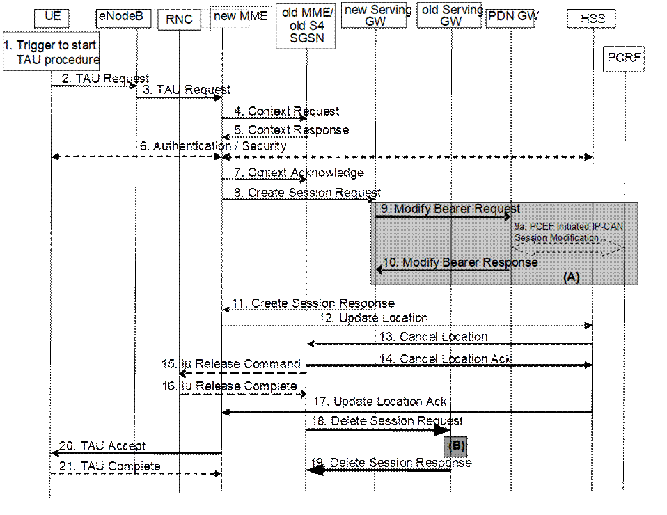
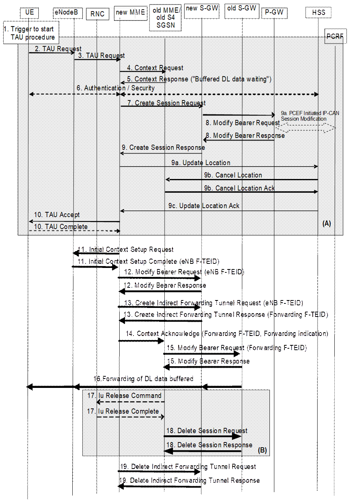
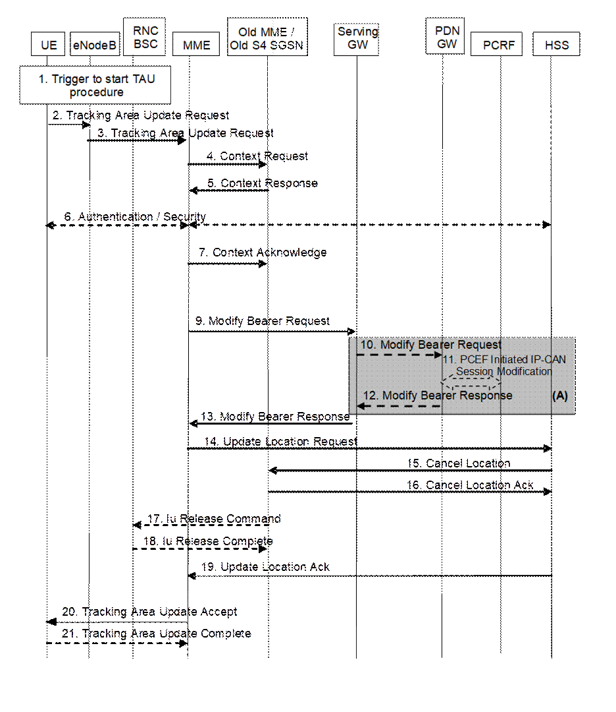
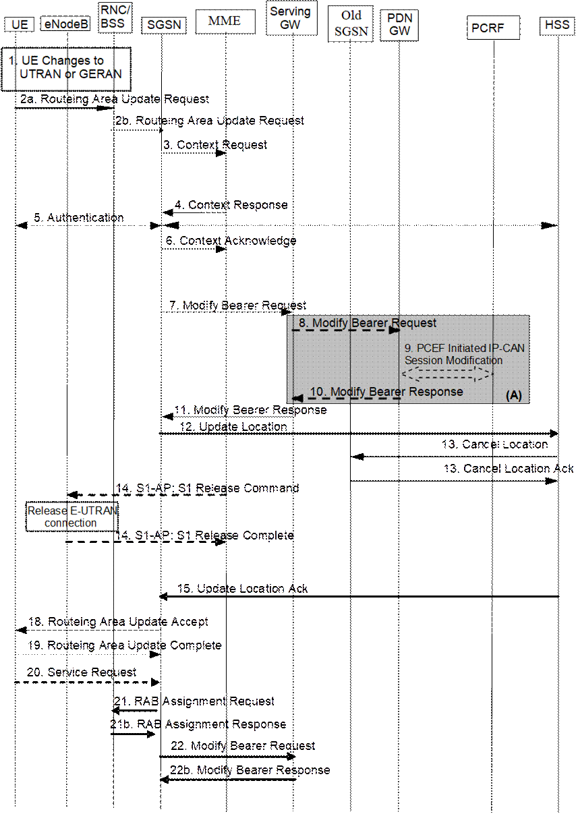
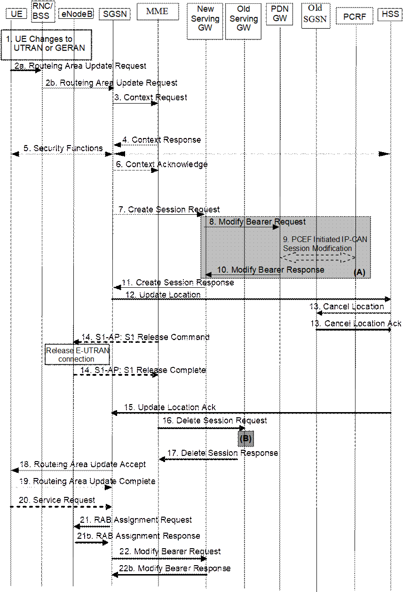

A stand-alone tracking area update (with or
without S‑GW change, described in clauses 5.3.3.1 and 5.3.3.2
respectively) occurs when a GPRS-attached or E‑UTRAN-attached UE
experiences any of the following conditions:
- UE detects it has entered a new TA that is not in the list of TAIs that the UE registered with the network (except for the case of a UE configured to perform Attach with IMSI when entering a TA in a new non-equivalent PLMN in RRC-IDLE mode);
- the periodic TA update timer has expired;
- UE was in UTRAN PMM_Connected state (e.g. URA_PCH) when it reselects to E‑UTRAN;
- UE was in GPRS READY state when it reselects to E‑UTRAN;
- the TIN indicates "P-TMSI" when the UE reselects to E-UTRAN (e.g. due to bearer configuration modifications performed on GERAN/UTRAN);
- the RRC connection was released with release cause "load re-balancing TAU required";
- the RRC layer in the UE informs the UE's NAS layer that an RRC connection failure (in either E-UTRAN or UTRAN) has occurred;
- a change of the UE Network Capability and/or MS Network Capability and/or UE Specific DRX Parameters and/or TS 24.008 [47] MS Radio Access capability (e.g. due to GERAN radio capability change, E-UTRAN, NG-RAN capability change or cdma2000 Radio Access Technology Capability change) information of the UE.
- for UE supporting RACS in ECM-IDLE as defined in clause 5.11.3a, a change in UE Radio Access capability (e.g. due to GERAN radio capability change, E-UTRAN, NG-RAN capability change or cdma2000 Radio Access Technology Capability change) corresponding to signalling a different UE Radio Capability ID.
- a change in conditions in the UE require a change in the extended idle mode DRX parameters previously provided by the MME.
- for a UE supporting CS fallback, or configured to support IMS voice, or both, a change of the UE's usage setting or voice domain preference for E-UTRAN.
- for a SR-VCC capable UE, a change of MS Classmark 2 and/or MS Classmark 3 and/or Supported Codecs.
- UE manually selects a CSG cell whose CSG ID and associated PLMN is absent from both the UE's Allowed CSG list and the UE's Operator CSG list.
- UE receives a paging request from the MME while the Mobility Management back off timer is running and the UE's TIN indicates "P-TMSI".
- a change in any of the values of information included in Preferred Network Behaviour as defined in clause 4.3.5.10 that would create incompatibility with the Supported Network Behaviour provided by the serving MME.
NOTE 1: The complete list of TAU triggers is specified in TS 24.301 [46].
The procedure is initiated by an UE in either ECM-IDLE state or ECM-CONNECTED state. The decision to perform S‑GW change during the tracking area update procedure is made by the MME independently from the triggers above.
If SIPTO is allowed for the APN associated with a PDN connection, the MME should re-evaluate whether the PDN GW location is still acceptable. If the MME determines that PDN GW re-location is needed, the MME may initiate PDN deactivation with reactivation requested according to clause 5.10.3 at the end of the tracking area/routing area update procedure.
NOTE 2. It depends on the operator's configuration in the MME whether to use the deactivation with reactivation request or allow the continued usage of the already connected GW.
If SIPTO at the local network is allowed for the APN associated with a PDN connection the MME handles the SIPTO at the Local Network PDN connection as follows.
For a L‑GW collocated with (H)eNB:
- For intra-MME mobility, upon completion of the TAU procedure the MME shall deactivate the SIPTO at the local Network PDN connection with the "reactivation requested" cause value according to clause 5.10.3. If the UE has no other PDN connection, the MME initiates "explicit detach with reattach required" procedure according to clause 5.3.8.3.
- For Inter-MME/SGSN mobility, as part of the Tracking Area Update procedure, the source MME shall remove the bearer(s) corresponding to the SIPTO at Local Network PDN connection and shall release the core network resources associated to the SIPTO at the Local Network PDN connection by performing the MME-initiated PDN Connection Deactivation before sending the Context Response message.
For a stand-alone GW:
- For intra-MME mobility, upon completion of the TAU procedure the MME checks that the Local Home Network ID has changed and decides whether to deactivate the SIPTO at the local Network PDN connection with the "reactivation requested" cause value according to clause 5.10.3. If the UE has no other PDN connection, the MME initiates "explicit detach with reattach required" procedure according to clause 5.3.8.3.
- For Inter-MME/SGSN mobility, upon completion of the TAU/RAU procedure the new MME/SGSN checks that the Local Home Network ID has changed and decides whether to deactivate the SIPTO at the Local Network PDN connection with the "reactivation requested" cause value according to clause 5.10.3. If the UE has no other PDN connection, the MME initiates "explicit detach with reattach required" procedure according to clause 5.3.8.3.
If LIPA is active for a PDN connection of the UE, the source MME (or S4-SGSN) shall not include LIPA bearer(s) in the EPS bearer Context during Tracking Area Update procedure and shall release the core network resources of this LIPA PDN connection by peforming the MME requested PDN disconnection procedure according to steps 2 to 6 of clause 5.10.3 before it responds with the Context Response message in the case of inter-MME/SGSN mobility or after it receives Tracking Area Update Request in the case of intra-MME mobility.
NOTE 3: The source MME may not be able to release the LIPA PDN connection after the Context Response is sent as when there is no S-GW relocation, the S-GW will assign the S11 control tunnel of the UE to the new MME after the new MME updates the context information.
During the Tracking Area Update procedure, if the MME supports SRVCC and if the UE SRVCC capability has changed, the MME informs the HSS with the UE SRVCC capability e.g. for further IMS registration.
The cell selection for UTRAN is described in TS 25.304 [12] and TS 25.331 [33].
If during the Tracking Area Update procedure the MME detects that the Serving GW or/and the MME needs be relocated, the old MME may reject any PDN GW initiated EPS bearer(s) request received since the Tracking Area Update procedure started and if rejected, the old MME shall include an indication that the request has been temporarily rejected due to mobility procedure in progress. The rejection is forwarded by the Serving GW to the PDN GW, with the indication that the request has been temporarily rejected.
Upon reception of a rejection for an EPS bearer(s) PDN GW initiated procedure with an indication that the request has been temporarily rejected due to mobility procedure in progress, the PDN GW start a locally configured guard timer. The PDN GW shall re-attempt, up to a pre-configured number of times, when either it detects that the Tracking Area Update procedure is completed or has failed using message reception or at expiry of the guard timer.
The eNodeB shall include the TAI+ECGI of the
current cell in every S1-AP UPLINK NAS TRANSPORT message. If Dual Connectivity
is activated for the UE, the eNodeB shall also include the PSCell ID in every
S1-AP UPLINK NAS TRANSPORT message.
NOTE: An eNodeB can contain cells from more than one Tracking Area and intra-eNodeB cell changes are not normally notified to the MME. However, the MME needs to know the UE's current TAI in order to correctly produce a TAU accept message.

Figure 5.3.3.1-1: Tracking Area Update procedure with Serving GW change
NOTE 1: For a PMIP-based S5/S8, procedure steps (A) and (B) are defined in TS 23.402 [2]. Steps 9 and 10 concern GTP based S5/S8.
NOTE 2: In case of Tracking Area Update without MME change the signalling in steps 4, 5, 7 and steps 12-17 are skipped.
1. One of the triggers described in clause 5.3.3.0 for starting the TAU procedure occurs.
2. The UE initiates the TAU procedure by sending, to the eNodeB, a TAU Request (UE Core Network Capability, MS Network Capability, Preferred Network behaviour, Support for restriction of use of Enhanced Coverage, old GUTI, Old GUTI type, last visited TAI, active flag, signalling active flag, EPS bearer status, P‑TMSI Signature, additional GUTI, eKSI, NAS sequence number, NAS-MAC, KSI, Voice domain preference and UE's usage setting, UE has UE Radio Capability ID assigned for the selected PLMN) message together with RRC parameters indicating the Selected Network and the old GUMMEI. An exception is that, if the TAU was triggered for load re-balancing purposes (see clause 4.3.7.3), the old GUMMEI is not included in the RRC parameters. The UE shall set the Old GUTI Type to indicate whether the Old GUTI is a native GUTI or is mapped from a P-TMSI and RAI.
If the UE's TIN indicates "GUTI" or "RAT‑related TMSI" and the UE holds a valid GUTI then the old GUTI indicates this valid GUTI. If the UE's TIN indicates "P‑TMSI" and the UE holds a valid P‑TMSI and related RAI then these two elements are indicated as the old GUTI. Mapping a P‑TMSI and RAI to a GUTI is specified in Annex H. When the UE is in connected mode (e.g. in URA_PCH) when it reselects to E‑UTRAN, the UE shall set its TIN to "P‑TMSI".
If the UE holds a valid GUTI and the old GUTI indicates a GUTI mapped from a P-TMSI and RAI, then the UE indicates the GUTI as additional GUTI. If the old GUTI indicates a GUTI mapped from a P-TMSI and RAI, and the UE has a valid P-TMSI signature, the P-TMSI signature shall be included.
The additional GUTI in the Tracking Area Update Request message allows the new MME to find any already existing UE context stored in the new MME when the old GUTI indicates a value mapped from a P-TMSI and RAI.
Alternatively, when a UE only supports E-UTRAN, it identifies itself with the old GUTI and sets the Old GUTI Type to 'native'.
The RRC parameter "old GUMMEI" takes its value from the identifier that is signalled as the old GUTI according to the rules above. For a combined MME/SGSN the eNodeB is configured to route the MME‑code(s) of this combined node to the same combined node. This eNodeB is also configured to route MME‑code(s) of GUTIs that are generated by the UE's mapping of the P‑TMSIs allocated by the combined node. Such an eNodeB configuration may also be used for separate nodes to avoid changing nodes in the pool caused by inter RAT mobility.
The last visited TAI shall be included in order to help the MME produce a good list of TAIs for any subsequent TAU Accept message. Selected Network indicates the network that is selected. Active flag is a request by UE to activate the radio and S1 bearers for all the active EPS Bearers by the TAU procedure when the UE is in ECM-IDLE state. Signalling active flag is a request by UE using Control Plane CIoT EPS Optimisation to maintain the NAS signalling connection after Tracking Area Update Procedure is completed in order to transmit pending Data using the Data Transport in Control Plane CIoT EPS Optimisation or NAS signalling. The EPS bearer status indicates each EPS bearer that is active in the UE. The TAU Request message shall be integrity protected by the NAS-MAC as described in TS 33.401 [41]. eKSI, NAS sequence number and NAS-MAC are included if the UE has valid EPS security parameters. NAS sequence number indicates the sequential number of the NAS message. KSI is included if the UE indicates a GUTI mapped from a P‑TMSI in the information element "old GUTI".
In the RRC connection establishment signalling associated with the TAU Request, the UE indicates its support of the CIoT EPS Optimisations relevant for MME selection.
For UE using CIoT EPS Optimisation without any activated PDN connection, there is no active flag or EPS bearer status included in the TAU Request message. For a UE with a running Service Gap timer in the UE the UE shall not set the active flag and the signalling active flag in the TAU request message (see clause 4.3.17.9).
If the UE has any PDN connection of PDN Type "non-IP" or "Ethernet", the UE shall send the EPS bearer status in the TAU Request message.
The UE sets the voice domain preference and UE's usage setting according to its configuration, as described in clause 4.3.5.9.
The UE includes extended idle mode DRX parameters information element if it needs to enable extended idle mode DRX, even if extended idle mode DRX parameters were already negotiated before.
If a UE includes a Preferred Network Behaviour, this defines the Network Behaviour the UE is expecting to be available in the network as defined in clause 4.3.5.10.
If the UE supports RACS as defined in clause 5.11.3a, and if the UE is provisioned with a UE Radio Capability ID for use in the selected PLMN (i.e.PLMN-assigned for the specific PLMN or manufacturer-assigned), the UE includes a flag that indicates it has an assigned UE Radio Capability ID for use in the selected PLMN but the actual UE Radio Capability is provided to MME after security context is established in step 6 (see below).
3. The eNodeB derives the MME address from the RRC parameters carrying the old GUMMEI, the indicated Selected Network and the RAT (NB-IoT or WB-E-UTRAN). If that MME is not associated with that eNodeB or the GUMMEI is not available or the UE indicates that the TAU procedure was triggered by load re-balancing, the eNodeB selects an MME as described in clause 4.3.8.3 on "MME Selection Function".
The eNodeB forwards the TAU Request message together with the CSG access mode, CSG ID, TAI+ECGI of the cell from where it received the message and with the Selected Network to the new MME. CSG ID is provided by RAN if the UE sends the TAU Request message via a CSG cell or a hybrid cell. CSG access mode is provided if the UE sends the TAU Request message via a hybrid cell. If the CSG access mode is not provided but the CSG ID is provided, the MME shall consider the cell as a CSG cell. For SIPTO at the Local Network with stand-alone GW architecture the eNodeB includes the Local Home Network ID in the Initial UE Message and in Uplink NAS Transport message if the target cell is in a Local Home Network.
To assist Location Services, the eNB indicates the UE's Coverage Level to the MME.
4. The new MME differentiates the type of the old node, i.e. MME or SGSN, as specified in clause 4.3.19, uses the GUTI received from the UE to derive the old MME/S4 SGSN address, and sends a Context Request (old GUTI, complete TAU Request message, P‑TMSI Signature, MME Address, UE validated, CIoT EPS Optimisation support inidication) message to the old MME/old S4 SGSN to retrieve user information. UE Validated indicates that the new MME has validated the integrity protection of the TAU message, e.g. based on native EPS security context for the UE. To validate the Context Request the old MME uses the complete TAU Request message and the old S4 SGSN uses the P‑TMSI Signature and responds with an appropriate error if integrity check fails in old MME/S4 SGSN. This shall initiate the security functions in the new MME. If the security functions authenticate the UE correctly, the new MME shall send a Context Request (IMSI, complete TAU Request message, MME Address, UE Validated) message to the old MME/S4 SGSN with the UE Validated set. If the new MME indicates that it has authenticated the UE or if the old MME/old S4 SGSN correctly validates the UE, then the old MME/old S4 SGSN starts a timer.
If the UE with emergency bearers is not authenticated in the old MME/old S4 SGSN (in a network supporting unauthenticated UEs) the old MME/old S4 SGSN continues the procedure with sending a Context Response and starting the timer also when it cannot validate the Context Request.
If a RLOS attached UE is not successfully authenticated in the old MME, the old MME continues the procedure with sending a Context Response and starting the existing timer also when it cannot validate the Context Request.
If the new MME supports CIoT EPS Optimisation, CIoT EPS Optimisation support indication is included in the Context Request indicating support for various CIoT EPS Optimisations (e.g. support for header compression for CP CIoT EPS Optimisation, etc.).
5. If the Context Request is sent to an old MME the old MME responds with a Context Response (IMSI, ME Identity (IMEISV), MM Context, EPS Bearer Context(s), Serving GW signalling Address and TEID(s), ISR Supported, MS Info Change Reporting Action (if available), CSG Information Reporting Action (if available), UE Time Zone, UE Core Network Capability, UE Specific DRX Parameters, Remaining Running Service Gap timer, LTE-M UE Indication) message. If the new MME supports CIoT EPS Optimisation and the use of header compression has been negotiated between the UE and the old MME, the Context Response also includes the Header Compression Configuration which includes the information necessary for the ROHC channel setup but not the RoHC context itself.
If the Context Request is sent to an old S4 SGSN the old S4 SGSN responds with a Context Response (MM Context, EPS Bearer Context(s), Serving GW signalling Address and TEID(s), ISR Supported, MS Info Change Reporting Action (if available), CSG Information Reporting Action (if available), UE Time Zone, UE Core Network Capability, UE Specific DRX Parameters). If the source MME has not yet reported a non-zero MO Exception Data Counter to the PDN GW, the Context Response also includes the MO Exception Data Counter as described in TS 29.274 [43].
The MM Context contains security related information as well as other parameters (including IMSI and ME Identity (if available)) as described in clause 5.7.2 (Information Storage for MME). The unused Authentication Quintets in the MM Context are also maintained in the SGSN. TS 33.401 [41] gives further details on the transfer of security related information.
If the MM Context received with the Context Response message did not include IMEISV and the MME does not already store the IMEISV of the UE, the MME shall retrieve the ME Identity (IMEISV) from the UE.
The PDN GW Address and TEID(s) (for GTP-based S5/S8) or GRE Keys (PMIP-based S5/S8 at the PDN GW(s) for uplink traffic) and the TI(s), is part of the EPS Bearer Context. If the UE is not known in the old MME/old S4 SGSN or if the integrity check for the TAU Request message fails, the old MME/old S4 SGSN responds with an appropriate error cause. ISR Supported is indicated if the old MME/old S4 SGSN and associated Serving GW are capable to activate ISR for the UE.
If the UE receives emergency bearer services from the old MME/old S4 SGSN and the UE is UICCless, IMSI can not be included in the Context Response. For emergency attached UEs, if the IMSI cannot be authenticated, then the IMSI shall be marked as unauthenticated. Also, in this case, security parameters are included only if available.
For a RLOS attached UE, the old MME includes an RLOS indication to the new MME. If the RLOS attached UE in the old MME does not have a USIM, IMSI can not be included in the Context Response. If the RLOS attached UE has USIM but the IMSI cannot be successfully authenticated, then the IMSI shall be marked as unauthenticated. Also, in this case, security parameters are included only if available.
If SIPTO at the Local Network is active for a PDN connection in the architecture with stand-alone GW, the old MME/old S4 SGSN shall include the Local Home Network ID of the old cell in the EPS Bearer context corresponding to the SIPTO at the Local Network PDN connection.
For UE using CIoT EPS Optimisation without any activated PDN connection, there is no EPS Bearer Context(s) included in the Context Response message.
Based on the CIoT EPS Optimisation support indication, old MME only transfers the EPS Bearer Context(s) that the new MME supports. If the new MME does not support CIoT EPS Optimisation, EPS Bearer Context(s) of non-IP PDN connection are not transferred to the new MME. If the new MME does not support Ethernet PDN Type, EPS Bearer Context(s) of Ethernet PDN type are not transferred to the new MME. If the EPS Bearer Context(s) of a PDN connection has not been transferred, the old MME shall consider all bearers of that PDN connection as failed and release that PDN connection by triggering the MME requested PDN disconnection procedure specified in clause 5.10.3. The buffered data in the old MME is discarded after receipt of Context Acknowledgement.
If the EPS Bearer Context(s) are to be transferred to the new MME, the old MME also includes the Serving GW IP address and TEID for both S1-U and S11-U, if available.
If the Old MME is aware the UE is a LTE-M UE, it provides the LTE-M UE Indication to the new MME.
6. If the integrity check of TAU Request message (sent in step 2) failed, then authentication is mandatory. The authentication functions are defined in clause 5.3.10 on "Security Function". Ciphering procedures are described in clause 5.3.10 on "Security Function". If GUTI allocation is going to be done and the network supports ciphering, the NAS messages shall be ciphered.
If this TAU request is received for a UE which is already in ECM_CONNECTED state and the PLMN-ID of the TAI sent by the eNodeB in Step 3 is different from that of the GUTI, included in the TAU Request message, the MME shall delay authenticating the UE until after Step 21 (TAU Complete message).
NOTE 3: The MME delays the authentication such that the UE first updates its registered PLMN-ID to the new PLMN-ID selected by the RAN during handover. The new PLMN-ID is provided by the MME to the UE as part of the GUTI in the TAU accept message in Step 20. Doing this ensures that the same PLMN-ID is used in the derivation of the Kasme key by both the network and the UE.
If the new MME is configured to allow emergency bearer services for unauthenticated UE the new MME behave as follows:
- where a UE has only emergency bearer services, the MME either skip the authentication and security procedure or accepts that the authentication may fail and continues the Tracking Area Update procedure; or
- where a UE has both emergency and non emergency bearer services and authentication fails, the MME continues the Tracking Area Update procedure and deactivates all the non-emergency PDN connections as specified in clause 5.10.3.
If the new MME is configured to allow Restricted Local Operator Services, the new MME, based on local regulation and operator policy, may skip the authentication and security procedure, or may perform authentication if security parameters are available, or obtainable from HSS, and continues the Tracking Area Update procedure regardless of the authentication result.
If the UE indicated it has a UE Radio Capability ID assigned for use in the selected PLMN in step 2, the MME may request the UE to provide the UE Radio Capability ID in Security Mode Command, if the MME needs to get the UE Radio Capability ID from the UE e.g. at inter-PLMN mobility. If enquired by the MME the UE shall include the UE Radio Capability ID in Security Mode Command Accept for the supported UE radio capabilities.
7. The MME (if the MME has changed then it is the new MME) determines to relocate the Serving GW. The Serving GW is relocated when the old Serving GW cannot continue to serve the UE. The MME (if the MME has changed then it is the new MME) may also decide to relocate the Serving GW if a new Serving GW is expected to serve the UE longer and/or with a more optimal UE to PDN GW path, or if a new Serving GW can be co-located with the PDN GW. Selection of a new Serving GW is performed according to clause 4.3.8.2 on "Serving GW selection function".
If the MME has changed the new MME sends a Context Acknowledge (Serving GW change indication) message to the old MME/old S4 SGSN. Serving GW change indication indicates a new Serving GW has been selected. The old MME/old S4 SGSN marks in its UE context that the information in the GWs is invalid. And, if the old node is an MME, the old MME marks in its UE context that the information in the HSS is invalid. This ensures that the old MME/old S4 SGSN updates the GWs, and the old MME updates the HSS, if the UE initiates a TAU or RAU procedure back to the old MME/old S4 SGSN before completing the ongoing TAU procedure.
NOTE 4: Updating the GWs refers to deletion of session(s) on the Serving GW followed by re-creation of session(s) on the Serving GW. The re-creation of session(s) on the Serving GW will result in successful re-establishment of the S5/S8 tunnel between the selected Serving GW and the PDN GW.
If the security functions do not authenticate the UE correctly, then the TAU shall be rejected, and the new MME shall send a reject indication to the old MME/old S4 SGSN. The old MME/old S4 SGSN shall continue as if the Identification and Context Request was never received.
ISR is not indicated in the Context Acknowledge as ISR is not activated due to the S‑GW change.
For UE using CIoT EPS Optimisation without any activated PDN connection, the steps 8, 9, 10, 11, 18 and 19 are skipped.
8. If the MME has changed the new MME verifies the EPS bearer status received from the UE with the bearer contexts received from the old MME/old S4 SGSN. If the MME has not changed the MME verifies EPS bearer status from the UE with the bearer contexts available in the MM context. The MME releases any network resources related to EPS bearers that are not active in the UE. If there is no bearer context at all, the MME rejects the TAU Request.
If the MME selected a new Serving GW it sends a Create Session Request (IMSI, bearer contexts, MME Address and TEID, Type, the Protocol Type over S5/S8, RAT type, LTE-M RAT type reporting to PGW flag, Serving Network, UE Time Zone, MO Exception data counter) message per PDN connection to the selected new Serving GW. The PDN GW address and TFT (for PMIP-based S5/S8) are indicated in the bearer Contexts. Type indicates to the Serving GW to send the Modify Bearer Request to the PDN GW. The Protocol Type over S5/S8 is provided to Serving GW which protocol should be used over S5/S8 interface. RAT type indicates a change in radio access. If it is a mobility from a SGSN to a MME and if the MME supports location information change reporting, the MME shall include the User Location Information (according to the supported granularity) in the Create Session Request, regardless of whether location information change reporting had been requested in the previous RAT by the PDN GW. If it is an inter MME mobility and if the PDN GW requested location information change reporting, the MME includes the User Location Information IE in this message if it is different compared to the previously sent information. If the PDN GW requested User CSG information, the MME also includes the User CSG Information IE in this message. If Control Plane CIoT EPS Optimisation applies, the MME may also indicate S11-U tunnelling of NAS user data and send its own S11-U IP address and MME DL TEID for DL data forwarding by the SGW. The MME shall include the MO Exception data counter if it has received the counter for RRC cause "MO Exception data" in the Context Response message.
If only the Control Plane CIoT EPS Optimisation is used, the MME shall include a Control Plane Only PDN Connection Indicator in Create Session Request.
If the new MME receives the EPS bearer context with SCEF, then the new MME updates the SCEF as defined in TS 23.682 [74].
If the UE is using the LTE-M RAT type and the PDN GW expects the LTE-M RAT type reporting as specified in clause 5.11.5, the MME also includes the LTE-M RAT type reporting to PGW flag to indicate to the Serving GW to forward the LTE-M RAT type to the PDN GW.
9. The Serving GW informs the PDN GW(s) about the change of for example the RAT type that e.g. can be used for charging, by sending the message Modify Bearer Request (Serving GW Address and TEID, RAT type, Serving Network, PDN Charging Pause Support Indication) per PDN connection to the PDN GW(s) concerned. User Location Information IE and/or UE Time Zone IE and/or User CSG Information IE and/or MO Exception data counter are also included if they are present in step 8. The Serving GW and PDN GW indicate each use of the RRC establishment cause "MO Exception Data" by the related counter on its CDR.
If the Serving GW has received the Control Plane Only PDN Connection Indicator in step 8, the Serving GW indicates the use of CP only on its CDR.
If LTE-M RAT type and the LTE-M RAT type reporting to PGW flag were received at step 8, the Serving GW shall include the LTE-M RAT type in the Modify Bearer Request message to the PGW. Otherwise the Serving GW includes RAT type WB-E-UTRAN.
9a If dynamic PCC is deployed, and RAT type information needs to be conveyed from the PDN GW to the PCRF, then the PDN GW shall send RAT type information to the PCRF by means of an IP‑CAN Session Modification procedure as defined in TS 23.203 [6].
NOTE 5: The PDN GW does not need to wait for the PCRF response, but continues in the next step. If the PCRF response leads to an EPS bearer modification the PDN GW should initiate a bearer update procedure.
10. The PDN GW updates its bearer contexts and returns a Modify Bearer Response (MSISDN, Charging Id, PDN Charging Pause Enabled Indication (if PDN GW has chosen to enable the function)) message. The MSISDN is included if the PDN GW has it stored in its UE context. If there has been a RAT change towards E-UTRAN and location information change reporting is required and supported in the target MME, the PDN GW shall provide MS Info Change Reporting Action in the Modify Bearer Response.
If the Serving GW is relocated, the PDN GW shall send one or more "end marker" packets on the old path immediately after switching the path in order to assist the reordering function in the target eNodeB. If the Serving GW has no downlink user plane established, the Serving GW shall discard the "end marker" received from the PDN GW and shall not send Downlink Data Notification. Otherwise the Serving GW shall forward the "end marker" packets to the source eNodeB or source S4 SGSN.
11. The Serving GW updates its bearer context. This allows the Serving GW to route bearer PDUs to the PDN GW when received from eNodeB.
The Serving GW returns a Create Session Response (Serving GW address and TEID for user plane and control plane and PDN GW TEIDs (for GTP-based S5/S8) or GRE keys (for PMIP-based S5/S8) for uplink traffic and control plane, MS Info Change Reporting Action) message to the new MME.
If Control Plane CIoT EPS Optimisation applies and if the MME does not include Control Plane Only PDN Connection Indicator in the Create Session Request:
- If separation of S11-U from S1-U is required, the Serving GW shall include the Serving GW IP address and TEID for S11-U and additionally the Serving GW IP address and TEID for S1-U in the Create Session Response.
- Otherwise, if separation of S11-U from S1-U is not required, the Serving GW includes the Serving GW IP address and TEID for S11-U in Create Session Response.
When the MME receives the Create Session Response message, the MME checks if there is a "Availability after DDN Failure" monitoring event or a "UE Reachability" monitoring event configured for the UE in the MME and in such a case sends an event notification (see TS 23.682 [74] for further information).
12. The new MME verifies whether it holds subscription data for the UE identified by the GUTI, the additional GUTI or by the IMSI received with the context data from the old CN node.
If there are no subscription data in the new MME for this UE, or for some network sharing scenario (e.g. GWCN) if the PLMN-ID of the TAI supplied by the eNodeB is different from that of the GUTI in the UE's context, then the new MME sends an Update Location Request (MME Identity, IMSI, ULR-Flags, MME Capabilities, Homogeneous Support of IMS Voice over PS Sessions, UE SRVCC capability, equivalent PLMN list, ME Identity (IMEISV)) message to the HSS. ULR-Flags indicates that update location is sent from an MME and the MME registration shall be updated in HSS. The HSS does not cancel any SGSN registration. The MME capabilities indicate the MME's support for regional access restrictions functionality. The inclusion of the equivalent PLMN list indicates that the MME supports the inter-PLMN handover to a CSG cell in an equivalent PLMN using the subscription information of the target PLMN. The "Homogenous Support of IMS Voice over PS Sessions" indication (see clause 4.3.5.8A) shall not be included unless the MME has completed its evaluation of the support of "IMS Voice over PS Session" as specified in clause 4.3.5.8. The ME Identity is included if step 5 caused the MME to retrieve the IMEISV from the UE.
NOTE 6: At this step, the MME may not have all the information needed to determine the setting of the IMS Voice over PS Session Supported indication for this UE (see clause 4.3.5.8). Hence the MME can send the "Homogenous Support of IMS Voice over PS Sessions" later on in this procedure.
If the UE initiates the TAU procedure in a VPLMN supporting Autonomous CSG Roaming and the HPLMN has enabled Autonomous CSG Roaming in the VPLMN (via Service Level Agreement) and the MME needs to retrieve the CSG subscription information of the UE from the CSS, the MME initiates the Update CSG Location Procedure with CSS as described in clause 5.3.12.
If the MME determines that only the UE SRVCC capability has changed, the MME sends a Notify Request to the HSS to inform about the changed UE SRVCC capability.
If all the EPS bearers of the UE have emergency ARP value, the new MME may skip the update location procedure or proceed even if the update location fails.
If the UE is RLOS attached, the new MME skips the Update Location procedure.
13. The HSS sends the message Cancel Location (IMSI, Cancellation Type) to the old MME with Cancellation Type set to Update Procedure.
14. If the timer started in step 4 is not running, the old MME removes the MM context. Otherwise, the contexts are removed when the timer expires. It also ensures that the MM context is kept in the old MME for the case the UE initiates another TAU procedure before completing the ongoing TAU procedure to the new MME. The old MME acknowledges with the message Cancel Location Ack (IMSI).
15. When old S4 SGSN receives the Context Acknowledge message and if the UE is in Iu Connected, the old S4 SGSN sends an Iu Release Command message to the RNC after the timer started in step 4 has expired.
16. The RNC responds with an Iu Release Complete message.
17. The HSS acknowledges the Update Location Request message by sending an Update Location Ack (IMSI, Subscription Data) message to the new MME. The Subscription Data may contain the CSG subscription data for the registered PLMN and for the equivalent PLMN list requested by MME in step 12.
The subscription data may contain Enhanced Coverage Restricted parameter. If received from the HSS, MME stores this Enhanced Coverage Restricted parameter in the MME MM context.
The subscription data may contain a Service Gap Time. If received from the HSS, the MME stores this Service Gap Time in the MME MM context for the UE and passes it to the UE in the Tracking Area Update Accept message.
The subscription data may contain Subscribed Paging Time Window parameter that applies to the UEs on a specific RAT, e.g. NB-IoT. If received from the HSS, MME stores this Subscribed Paging Time Window parameter in the MME MM context.
If the Update Location is rejected by the HSS, the new MME rejects the TAU Request from the UE with an appropriate cause. In such cases, the new MME releases any local MME EPS Bearer contexts for this particular UE, and additionally deletes the EPS bearer resources in the new Serving GW by sending the Delete Session Request (Cause, Operation Indication) messages to the new Serving GW. The Operation Indication flag shall not be set. Therefore, the new Serving GW receiving this request shall not initiate a delete procedure towards the PDN GW.
If the UE initiates the TAU procedure at a CSG cell, the new MME shall check whether the CSG ID and associated PLMN is contained in the CSG subscription and is not expired. If the CSG ID and associated PLMN is not present or expired, the MME shall send a Tracking Area Update reject message to the UE with an appropriate cause value. The UE shall remove the CSG ID and associated PLMN from its Allowed CSG list if present. If the UE has ongoing emergency bearer services no CSG access control shall be performed.
If all checks are successful then the new MME constructs a context for the UE.
18. If the MME has changed, when the timer started in step 4 expires the old MME/old S4 SGSN releases any local MME or SGSN bearer resources and additionally the old MME/old S4 SGSN deletes the EPS bearer resources by sending the Delete Session Request (Cause, Operation Indication) messagesto the old Serving GW if it received the Serving GW change indication in the Context Acknowledge message in step 7. When the Operation Indication flag is not set, that indicates to the old Serving GW that the old Serving GW shall not initiate a delete procedure towards the PDN GW. If ISR is activated the Cause indicates to the old S‑GW that the old S‑GW shall delete the bearer resources on the other old CN node by sending Delete Bearer Request message(s) to that CN node.
If the MME has not changed, step 11 triggers the release of the EPS bearer resources at the old Serving GW.
19. The Serving GW acknowledges with Delete Session Response (Cause) messages. The Serving GW discards any packets buffered for the UE.
20. If due to regional subscription restrictions or access restrictions (e.g. CSG restrictions) (received in update location procedure in step 17) the UE is not allowed to access the TA:
- The MME rejects the Tracking Area Update Request with an appropriate cause to the UE.
- For UEs with emergency EPS bearers, i.e. at least one EPS bearer has an ARP value reserved for emergency services, the new MME accepts the Tracking Area Update Request and deactivates all non-emergency PDN connections as specified in clause 5.10.3. If the Tracking Area Update procedure is initiated in ECM-IDLE state, all non-emergency EPS bearers are deactivated by the Tracking Area Update procedure without bearer deactivation signalling between the UE and the MME.
The MME sends a TAU Accept (GUTI, TAI list, EPS bearer status, NAS sequence number, NAS-MAC, IMS Voice over PS session supported, Emergency Service Support indicator, LCS Support Indication, Supported Network Behaviour, Service Gap Time, Enhanced Coverage Restricted, Indication of support of 15 EPS bearers per UE) message to the UE. If the active flag is set the MME may provide the eNodeB with Handover Restriction List. GUTI is included if the MME allocates a new GUTI. If the active flag is set in the TAU Request message the user plane setup procedure can be activated in conjunction with the TAU Accept message. If the DL Data Buffer Expiration Time for the UE in the MME has not expired, the user plane setup procedure is activated even if the MME did not receive the active flag in the TAU Request message. If the new MME receives the Downlink Data Notification message or any downlink signalling message while the UE is still connected, the user plane setup procedure may be activated even if the new MME did not receive the active flag in the TAU Request message. The procedure is described in detail in TS 36.300 [5]. The message sequence should be the same as for the UE triggered Service Request procedure specified in clause 5.3.4.1 from the step when MME establishes the bearer(s). The MME indicates the EPS bearer status IE to the UE. The UE removes any internal resources related to bearers that are not marked active in the received EPS bearer status. If the EPS bearer status information was in the TAU Request, the MME shall indicate the EPS bearer status to the UE. Handover Restriction List is described in clause 4.3.5.7 "Mobility Restrictions". The MME sets the IMS Voice over PS session supported as described in clause 4.3.5.8.
For UE using CIoT EPS Optimisation without any activated PDN connection, there is no EPS bearer status included in the TAU Accept message.
The MME indicates the CIoT EPS Optimisations it supports and prefers in the Supported Network Behaviour information as defined in clause 4.3.5.10.
If there is a Service Gap timer running for the UE in the MME, and the active flag or the signalling active flag is received in the TAU Request message, the MME shall ignore the active flag and signalling active flag and not perform any of the actions related to these flags.
The MME shall include the Service Gap Time in the TAU Accept message if the UE has indicated Service Gap Control capability and either if Service Gap Time was received in step 17 from HSS in the subscription information or if the Service Gap Time in the subscription information has been updated by HSS User Profile management (i.e. the Insert Subscriber Data procedure in clause 5.3.9.2).
If the UE included support for restriction of use of Enhanced Coverage in step 1, the MME sends Enhanced Coverage Restricted parameter to the eNB in the S1-AP message as defined in clause 4.3.28. The MME also sends the Enhanced Coverage Restricted parameter to the UE in the TAU Accept message. UE shall store Enhanced Coverage Restricted parameter and shall use the value of Enhanced Coverage Restricted parameter to determine if enhanced coverage feature should be used or not.
If the MME successfully obtained Header Compression Configuration parameters in step 5 it indicates the continued use of previous negotiated configuration to the UE in the Header Compression Context Status for each EPS Bearer of the UE. When Header Compression Context Status indicates that the previous negotiated configuration can no longer be used for some EPS bearers, the UE shall stop performing header compression and decompression, when sending or receiving data using Control Plane CIoT EPS Optimisation on these EPS bearers.
If the MME did not receive the Voice Support Match Indicator in the MM Context, then the MME may send a UE Radio Capability Match Request to the eNB as described in clause 5.3.14. If the MME hasn't received Voice Support Match Indicator from the eNB then, based on implementation, MME may set IMS Voice over PS session supported Indication and update it at a later stage. After step 12, and in parallel to any of the preceding steps, the MME shall send a Notify Request (Homogeneous Support of IMS Voice over PS Sessions) message to the HSS:
- If the MME has evaluated the support of IMS Voice over PS Sessions, see clause 4.3.5.8, and
- If the MME determines that it needs to update the Homogeneous Support of IMS Voice over PS Sessions, see clause 4.3.5.8A.
The Emergency Service Support indicator informs the UE that Emergency bearer services are supported. LCS Support Indication indicates whether the network supports the EPC-MO-LR and/or CS-MO-LR as described in TS 23.271 [57]. Indication for support of 15 EPS bearers per UE indicates the network support for up to 15 EPS bearers per UE as defined in clause 4.12.
If the UE included extended idle mode DRX parameters information element, the MME includes extended idle mode DRX parameters information element if it decides to enable extended idle mode DRX with Paging Time Window length assigned considering Subscribed Paging Time Window (if available) and the local policy.
When receiving the TAU Accept message and there is no ISR Activated indication the UE shall set its TIN to "GUTI".
For a S‑GW change, ISR Activated is never indicated by the MME as it needs a RAU with the same S‑GW first to activate ISR. For an MME change, ISR is not activated by the new MME to avoid context transfer procedures with two old CN nodes.
If the TAU procedure is initiated by manual CSG selection and occurs via a CSG cell, the UE upon receiving the TAU Accept message shall add the CSG ID and associated PLMN to its Allowed CSG list if it is not already present. Manual CSG selection is not supported if the UE has emergency bearers established.
If the user plane setup is performed in conjunction with the TAU Accept message and the TAU is performed via a hybrid cell, then the MME shall send an indication whether the UE is a CSG member to the RAN along with the S1-MME control message. Based on this information the RAN may perform differentiated treatment for CSG and non-CSG members.
NOTE 7: If the UE receives a TAU Accept message via a hybrid cell, the UE does not add the corresponding CSG ID and associated PLMN to its Allowed CSG list. Adding a CSG ID and associated PLMN to the UE's local Allowed CSG list for a hybrid cell is performed only by OTA or OMA DM procedures.
If the UE receives a Service Gap Time in the TAU Accept message, the UE shall store this parameter and apply Service Gap Control (see clause 4.3.17.9).
If the UE has indicated support for dual connectivity with NR in the TAU Request and the UE is not allowed to use NR as Secondary RAT, the MME indicates that to the UE in the TAU Accept message.
If the user plane setup is performed and if RACS is supported and MME has UE Radio Capability ID in UE context, it signals the UE Radio Capability ID to the eNB as defined in clause 5.11.3a. If the eNB does not have mapping between the specific UE Radio Capability ID and the UE radio capabilities, it shall use the procedure described in TS 36.413 [36] to retrieve the mapping from the Core Network.
21. If GUTI was included in the TAU Accept, the UE acknowledges the received message by returning a TAU Complete message to the MME.
When the "Active flag" is not set in the TAU Request message and the Tracking Area Update was not initiated in ECM-CONNECTED state, the new MME releases the signalling connection with UE, according to clause 5.3.5. For a UE using Control Plane CIoT EPS Optimisation, when the "Signalling active flag" is set, the new MME shall not release the NAS signalling connection with the UE immediately after the TAU procedure is completed.
NOTE 8: The new MME may initiate E‑RAB establishment (see TS 36.413 [36]) after execution of the security functions, or wait until completion of the TA update procedure. For the UE, E‑RAB establishment may occur anytime after the TA update request is sent.
In the case of a rejected tracking area update operation, due to regional subscription, roaming restrictions or access restrictions (see TS 23.221 [27] and TS 23.008 [28]) the new MME should not construct an MM context for the UE. In the case of receiving the subscriber data from HSS, the new MME may construct an MM context and store the subscriber data for the UE to optimise signalling between the MME and the HSS. A reject shall be returned to the UE with an appropriate cause and the S1 connection shall be released. Upon return to idle, the UE shall act according to TS 23.122 [10].
The new MME shall determine the Maximum APN restriction based on the received APN Restriction of each bearer context in the Context Response message and then store the new Maximum APN restriction value.
The bearer contexts shall be prioritized by the new MME. If the new MME is unable to support the same number of active bearer contexts as received from old MME/SGSN, the prioritisation is used to decide which bearer contexts to maintain active and which ones to delete. In any case, the new MME shall first update all contexts in one or more P‑GWs and then deactivate the bearer context(s) that it cannot maintain as described in the clause "MME Initiated Dedicated Bearer Deactivation Procedure". This shall not cause the MME to reject the tracking area update.
The new MME shall not deactivate emergency service related EPS bearers, i.e. EPS bearers with ARP value reserved for emergency services.
NOTE 9: If MS (UE) was in PMM-CONNECTED state the bearer contexts are sent already in the Forward Relocation Request message as described in the clause "Serving RNS relocation procedures" of TS 23.060 [7].
If the tracking area update procedure fails a maximum allowable number of times, or if the MME returns a Tracking Area Update Reject (Cause) message, the UE shall enter EMM DEREGISTERED state.
If the new MME identifies that the RAT type has changed, the MME checks the subscription information to identify for each APN whether to maintain the PDN connection, disconnect the PDN connection with a reactivation request, or, disconnect the PDN connection without reactivation request. If the MME decides to deactivate a PDN connection it performs MME-initiated PDN Connection Deactivation procedure after the tracking area update procedure is completed but before the S1/RRC interface connection is released. Existing ESM cause values as specified in TS 24.301 [46] (e.g. #39, "reactivation requested"; #66 "Requested APN not supported in current RAT and PLMN combination"; and for a dedicated bearer, possibly #37 "EPS QoS not accepted") are used to cause predictable UE behaviour. If all the PDN connections are disconnected and the UE does not support "attach without PDN connectivity", the MME shall request the UE to detach and reattach.

Figure 5.3.3.1A-1: Tracking Area Update procedure with Serving GW change and data forwarding
NOTE 1: The procedure steps (A) and (B) are defined in clause 5.3.3.1. Step 5 in the figure above has compared to clause 5.3.3.1 one additional parameter which is described below.
4. The timer setting by the old S4 SGSN or MME in step 4 (as in clause 5.3.3.1) shall ensure that the buffered data in the old Serving GW can be forwarded before the old Serving GW resource is released.
5. DL data is being buffered in the old Serving GW and the DL Data Expiration Time has not expired, therefore the old MME/old S4-SGSN indicates Buffered DL Data Waiting in the Context Response. This triggers the new MME to setup the user plane and invoke data forwarding. For Control Plane CIoT EPS Optimisation, if the DL data is buffered in the old Serving GW, and when the Buffered DL Data Waiting is indicated, the new MME shall setup the S11 user plane with the new Serving GW and invoke data forwarding. If the DL data is buffered in the old MME and the DL Data Expiration Time has not expired, the old MME shall discard the buffered DL data.
11-12. The user plane is setup. These procedure steps are defined in clause 5.3.4.1, steps 4-7 and steps 8-12 respectively in the UE Triggered Service Request procedure.
NOTE 2: It is assumed that Pause of PGW Charging is not invoked by SGW that is performing extended data buffering.
For Control Plane CIoT EPS Optimisation, steps 11 and 12 are skipped.
13. Since it was indicated in step 5 that buffered DL data is waiting, the new MME sets up forwarding parameters by sending Create Indirect Data Forwarding Tunnel Request (target eNodeB addresses and TEIDs for forwarding) to the Serving GW. The Serving GW sends a Create Indirect Data Forwarding Tunnel Response (target Serving GW addresses and TEIDs for forwarding) to the target MME. For Control Plane CIoT EPS Optimisation, the new MME sets up forwarding parameters by sending Create Indirect Data Forwarding Tunnel Request (target MME address and TEID for forwarding) to the Serving GW. Upon receipt of the Create Indirect Data Forwarding Tunnel Response message the new MME starts a timer for release of resources if resources for indirect forwarding were allocated in the new S-GW.
Indirect forwarding may be performed via a Serving GW which is different from the Serving GW used as the anchor point for the UE.
14. This procedure step is defined in clause 5.3.3.1, step 7. In addition the new MME includes the F-TEID where buffered DL data should be forwarded and a Forwarding indication in the Context Acknowledge message. The F-TEID is the F-TEID for the indirect forwarding received from step 13 or it may be the F-TEID of the eNB (when eNB supports forwarding).
15. A Modify Bearer Request( F-TEID ) is sent to the old Serving GW. The F-TEID is the Forwarding F-TEID where the buffered DL data shall be forwarded.
16. The old Serving GW forwards its buffered data towards the received F-TEID in step 15. The buffered DL data is sent to the UE over the radio bearers established in step 11. For Control Plane CIoT EPS Optimisation, the buffered DL data is sent to the new MME from the new Serving GW and is sent to the UE as described in steps 12-14 of clause 5.3.4B.3.
17-18. As steps 15-16, 18-19 in clause 5.3.3.1.
19. If indirect forwarding was used, then the expiry of the timer at the new MME started at step 13 triggers the new MME to send a Delete Indirect Data Forwarding Tunnel Request message to the new S-GW to release temporary resources used for indirect forwarding that were allocated at step 13.

Figure 5.3.3.2-1: E-UTRAN Tracking Area Update without S‑GW change
NOTE 1: For a PMIP-based S5/S8, procedure steps (A) are defined in TS 23.402 [2]. Steps 12 and 14 concern GTP based S5/S8.
NOTE 2: In case of Tracking Area Update without MME change the signalling in steps 4, 5, 7 and steps 9-19 are skipped. A change of UE Time Zone, User CSG information or Serving Network is signalled in the next Service Request. If TAI change need to be reported to the PDN GW, location information change reporting procedure described in clause 5.9.2 is performed.
NOTE 3: Deferred reporting of UE Time Zone, or Serving Network per NOTE 2 may fail when inter-MME/SGSN mobility occurs before a UE sends SERVICE REQUEST and the target MME/SGSN (e.g. pre-Release 10) does not support the "Change to Report" flag.
1. One of the triggers described in clause 5.3.3.0 for starting the TAU procedure occurs.
2. The UE initiates a TAU procedure by sending, to the eNodeB, a Tracking Area Update Request (UE Core Network Capability, MS Network Capability, Preferred Network behaviour, Support for restriction of use of Enhanced Coverage, active flag, signalling active flag, EPS bearer status, old GUTI, Old GUTI Type, last visited TAI, P-TMSI signature, additional GUTI, KSISGSN, KSIASME, NAS sequence number, NAS-MAC, Voice domain preference and UE's usage setting, UE has UE Radio Capability ID assigned for the selected PLMN) message together with RRC parameters indicating the Selected Network and the old GUMMEI. An exception is that, if the TAU was triggered for load re-balancing purposes (see clause 4.3.7.3), the old GUMMEI is not included in the RRC parameters. The UE shall set the Old GUTI Type to indicate whether the Old GUTI is a native GUTI or is mapped from a P-TMSI and RAI.
If the UE's TIN indicates "GUTI" or "RAT‑related TMSI" and the UE holds a valid GUTI then the old GUTI indicates this valid GUTI. If the UE's TIN indicates "P‑TMSI" and the UE holds a valid P‑TMSI and related RAI then these two elements are indicated as the old GUTI. Mapping a P‑TMSI and RAI to a GUTI is specified in Annex H. When the UE is in connected mode (e.g. in URA_PCH) when it reselects to E-UTRAN, the UE shall set its TIN to "P‑TMSI".
If the UE holds a valid GUTI and the old GUTI indicates a GUTI mapped from a P-TMSI and RAI, then the UE indicates the GUTI as additional GUTI. If the old GUTI indicates a GUTI mapped from a P-TMSI and RAI, and the UE has a valid P-TMSI signature, the P-TMSI signature shall be included.
The additional GUTI in the Tracking Area Update Request message allows the new MME to find any already existing UE context stored in the new MME when the old GUTI indicates a value mapped from a P-TMSI and RAI.
Alternatively, when a UE only supports E-UTRAN, it identifies itself with the old GUTI and sets the Old GUTI Type to 'native'.
The RRC parameter "old GUMMEI" takes its value from the identifier that is signalled as the old GUTI according to the rules above. For a combined MME/SGSN the eNodeB is configured to route the MME‑code(s) of this combined node to the same combined node. This eNodeB is also configured to route MME‑code(s) of GUTIs that are generated the UE's mapping of the P‑TMSIs allocated by the combined node. Such an eNodeB configuration may also be used for separate nodes to avoid changing nodes in the pool caused by inter RAT mobility.
The last visited TAI shall be included in order to help the MME produce a good list of TAIs for any subsequent TAU Accept message. Selected Network indicates the network that is selected. Active flag is a request by the UE to activate the radio and S1 bearers for all the active EPS Bearers by the TAU procedure. Signalling active flag is a request by UE using Control Plane CIoT EPS Optimisation to maintain the NAS signalling connection after Tracking Area Update Procedure is completed in order to transmit pending Data using the Data Transport in Control Plane CIoT EPS Optimisation or NAS signalling. The UE's ISR capability is included in the UE Core Network Capability element. The EPS bearer status indicates each EPS bearer that is active in the UE. The TAU Request message shall be integrity protected by the NAS-MAC as described in TS 33.401 [41]. KSIASME is included if the UE has valid security parameters. NAS sequence number indicates the sequential number of the NAS message.
In the RRC connection establishment signalling associated with the TAU Request, the UE indicates its support of the CIoT EPS Optimisations relevant for MME selection.
For UE using CIoT EPS Optimisation without any activated PDN connection, there is no active flag or EPS bearer status included in the TAU Request message. For a UE with a running Service Gap timer in the UE the UE shall not set the active flag or the signalling active flag in the TAU request message (see clause 4.3.17.9).
If the UE has any PDN connection of PDN Type "non-IP" or "Ethernet", the UE shall send the EPS bearer status in the TAU Request message.
KSISGSN is included if the UE indicates a GUTI mapped from a P‑TMSI in the information element "old GUTI".
The UE sets the voice domain preference and UE's usage setting according to its configuration, as described in clause 4.3.5.9.
The UE includes extended idle mode DRX parameters information element if it needs to enable extended idle mode DRX, even if extended idle mode DRX parameters were already negotiated before.
If a UE includes a Preferred Network Behaviour, this defines the Network Behaviour the UE is expecting to be available in the network as defined in clause 4.3.5.10.
If the UE supports RACS as defined in clause 5.11.3a, and if the UE is provisioned with a UE Radio Capability ID for use in the selected PLMN (i.e.PLMN-assigned for the specific PLMN or manufacturer-assigned), the UE includes a flag that indicates it has an assigned UE Radio Capability ID for use in the selected PLMN but the actual UE Radio Capability is provided to MME after security context is established in step 6 (see below).
3. The eNodeB derives the MME address from the RRC parameters carrying the old GUMMEI, the indicated Selected Network and the RAT (NB-IoT or WB-E-UTRAN). If that GUMMEI is not associated with the eNodeB, or the GUMMEI is not available or the UE indicates that the TAU procedure was triggered by load re-balancing, the eNodeB selects the MME as described in clause 4.3.8.3 on "MME Selection Function". The eNodeB forwards the TAU Request message together with the CSG access mode, CSG ID, TAI+ECGI of the cell from where it received the message and with the Selected Network to the MME. CSG ID is provided by RAN if the UE sends the TAU Request message via a CSG cell or a hybrid cell. CSG access mode is provided if the UE sends the TAU Request message via a hybrid cell. If the CSG access mode is not provided but the CSG ID is provided, the MME shall consider the cell as a CSG cell. For SIPTO at the Local Network with stand-alone GW architecture the eNodeB includes the Local Home Network ID in the Initial UE Message and in Uplink NAS Transport message if the target cell is in a Local Home Network.
To assist Location Services, the eNB indicates the UE's Coverage Level to the MME.
4. The new MME differentiates the type of the old node, i.e. MME or SGSN, as specified in clause 4.3.19, uses the GUTI received from the UE to derive the old MME/S4 SGSN address and sends a Context Request (old GUTI, MME Address, UE Validated, complete TAU Request message, P‑TMSI Signature, CIoT EPS Optimisation support inidication) message to the old MME/S4 SGSN to retrieve the user information. UE Validated indicates that the new MME has validated the integrity protection of the TAU message, e.g. based on native EPS security context for the UE. To validate the Context Request the old MME uses the complete TAU Request message and the old S4 SGSN uses the P-TMSI Signature and responds with an appropriate error if integrity check fails in old MME/S4 SGSN. This shall initiate the security functions in the new MME. If the security functions authenticate the UE correctly, the new MME shall send a Context Request (IMSI, complete TAU Request message, MME Address, UE Validated) message to the old MME/S4 SGSN with the UE Validated set. If the new MME indicates that it has authenticated the UE or if the old MME/old S4 SGSN authenticates the UE, the old MME/old S4 SGSN starts a timer.
If the UE with emergency bearers is not authenticated in the old MME/old S4 SGSN (in a network supporting unauthenticated UEs) the old MME/old S4 SGSN continues the procedure with sending a Context Response and starting the timer also when it cannot validate the Context Request.
If a RLOS attached UE is not successfully authenticated in the old MME and/or the Context Request cannot be validated, the old MME continues the procedure with sending a Context Response and starting the existing timer.
If the new MME supports CIoT EPS Optimisation, CIoT EPS Optimisation support indication is included in the Context Request indicating support for various CIoT EPS Optimisations (e.g. support for header compression for CP CIoT EPS Optimisation, etc.).
5. If the Context Request is sent to an old MME the old MME responds with a Context Response (IMSI, ME Identity (IMEISV), unused EPS Authentication Vectors, KSIASME, KASME, EPS Bearer Context(s), Serving GW signalling Address and TEID(s), MS Info Change Reporting Action (if available), CSG Information Reporting Action (if available), UE Time Zone, UE Core Network Capability, UE Specific DRX Parameters, Change to Report (if present), Remaining Running Service Gap timer, LTE-M UE Indication) message. If the new MME supports CIoT EPS Optimisation and the use of header compression has been negotiated between the UE and old MME, the Context Response also includes the Header Compression Configuration which includes the information necessary for the ROHC channel setup but not the RoHC context itself.
If the Context Request is sent to an old S4 SGSN the old S4 SGSN responds with a Context Response (IMSI, ME Identity (if available), unused Authentication Quintets, CK, IK, KSISGSN, EPS Bearer Context(s), Serving GW signalling Address and TEID(s), ISR Supported, MS Info Change Reporting Action (if available), CSG Information Reporting Action (if available), UE Time Zone, UE Core Network Capability, UE Specific DRX Parameters, Change to Report (if present)) message. The Authentication Quintets are maintained by the old S4 SGSN. TS 33.401 [41] gives further details on the transfer of security related information.
Change to Report flag is included by the old MME or the old S4 SGSN if reporting of change of UE Time Zone, or Serving Network, or both towards Serving GW / PDN GW was deferred by the old MME or old S4 SGSN.
If the Context Response message did not include IMEISV and the MME does not already store the IMEISV of the UE, the MME shall retrieve the ME Identity (IMEISV) from the UE.
The PDN GW Address and TEID(s) (for GTP-based S5/S8) or GRE Keys (PMIP-based S5/S8 at the PDN GW(s) for uplink traffic and the TI(s), is part of the EPS Bearer Context. ISR Supported is indicated if the old SGSN and associated Serving GW are capable to activate ISR for the UE.
The new MME shall ignore the UE Core Network Capability contained in the Context Response only when it has previously received an UE Core Network Capability in the Tracking Area Update Request. If the UE is not known in the old MME/old S4 SGSN or if the integrity check for the TAU request message fails, the old MME/old S4 SGSN responds with an appropriate error cause.
If the DL Data Buffer Expiration Time for the UE has not expired (see High latency communication in clause 4.3.17.7), the old MME/old S4-SGSN indicates Buffered DL Data Waiting in the Context Response. When this is indicated, the new MME shall setup the user plane in conjunction to the TAU procedure for delivery of the buffered DL data.
If the UE receives emergency bearer services from the old MME/old S4 SGSN and the UE is UICCless, IMSI can not be included in the Context Response. For emergency attached UEs, if the IMSI cannot be authenticated, then the IMSI shall be marked as unauthenticated. Also, in this case, security parameters are included only if available.
For a RLOS attached UE, the old MME includes an RLOS indication to the new MME. If the RLOS attached UE in the old MME does not have a USIM, IMSI can not be included in the Context Response. If the RLOS attached UE has USIM but the IMSI cannot be successfully authenticated, then the IMSI shall be marked as unauthenticated. Also, in this case, security parameters are included only if available.
If SIPTO at the Local Network is active for a PDN connection in the architecture with stand-alone GW, the old MME/old S4 SGSN shall include the Local Home Network ID of the old cell in the EPS Bearer context corresponding to the SIPTO at the Local Network PDN connection.
For UE using CIoT EPS Optimisation without any activated PDN connection, there is no EPS Bearer Context(s) included in the Context Response message.
Based on the CIoT EPS Optimisation support indication, old MME only transfers the EPS Bearer Context(s) that the new MME supports. If the new MME does not support CIoT EPS Optimisation, EPS Bearer Context(s) of non-IP PDN connection are not transferred to the new MME. If the new MME does not support Ethernet PDN Type, EPS Bearer Context(s) of Ethernet PDN type are not transferred to the new MME. If the EPS Bearer Context(s) of a PDN connection has not been transferred, the old MME shall consider all bearers of that PDN connection as failed and release that PDN connection by triggering the MME requested PDN disconnection procedure specified in clause 5.10.3. The buffered data in the old MME is discarded after receipt of Context Acknowledgement.
If the EPS Bearer Context(s) are to be transferred to the new MME, the old MME also includes the Serving GW IP address and TEID for both S1-U and S11-U, if available.
If the Old MME is aware the UE is a LTE-M UE, it provides the LTE-M UE Indication to the new MME.
6. If the integrity check of TAU Request message (sent in step 2) failed, then authentication is mandatory. The authentication functions are defined in clause 5.3.10 on "Security Function". Ciphering procedures are described in clause 5.3.10 on "Security Function". If GUTI allocation is going to be done and the network supports ciphering, the NAS messages shall be ciphered.
If this TAU request is received for a UE which is already in ECM_CONNECTED state and the PLMN-ID of the TAI sent by the eNodeB in Step 3 is different from that of the GUTI included in the TAU Request message, the MME shall delay authenticating the UE until after Step 21 (TAU Complete message).
NOTE 4: The MME delays the authentication such that the UE first updates its registered PLMN-ID to the new PLMN-ID selected by the RAN during handover. The new PLMN-ID is provided by the MME to the UE as part of the GUTI in the TAU accept message in Step 20. Doing this ensures that the same PLMN-ID is used in the derivation of the Kasme key by both the network and the UE.
If the new MME is configured to allow emergency bearer services for unauthenticated UE the new MME behave as follows:
- where a UE has only emergency bearer services, the MME either skip the authentication and security procedure or accepts that the authentication may fail and continues the Tracking Area Update procedure; or
- where a UE has both emergency and non emergency bearer services and authentication fails, the MME continues the Tracking Area Update procedure and deactivates all the non-emergency PDN connections as specified in clause 5.10.3.
If the new MME is configured to support Restricted Local Operator Services, the new MME, based on local regulation and operator policy, may skip the authentication and security procedure, or may perform authentication if security parameters are available or obtainable from HSS and continues the Tracking Area Update procedure regardless of the authentication result.
If the UE indicated it has a UE Radio Capability ID assigned for use in the selected PLMN in step 2, the MME may request the UE to provide the UE Radio Capability ID in Security Mode Command, if the MME needs to get the UE Radio Capability ID from the UE e.g. at inter-PLMN mobility. If enquired by the MME the UE shall include the UE Radio Capability ID in Security Mode Command Accept for the supported UE radio capabilities.
7. If the old node is an old MME the new MME sends a Context Acknowledge message to the old MME. The old MME marks in its context that the information in the GW and the HSS are invalid. This ensures that the MME updates the GWs and the HSS if the UE initiates a TAU procedure back to the MME before completing the ongoing TAU procedure.
NOTE 5: Updating the GWs refers to modification of session(s) on the Serving GW. This will result in successful re-establishment of the S11/S4 tunnel between the MME/SGSN and the Serving GW.
If the old node is an old S4 SGSN the MME sends a Context Acknowledge (ISR Activated) message to the old SGSN. Unless ISR Activated is indicated by the MME, the old S4 SGSN marks in its context that the information in the GWs is invalid. This ensures that the old S4 SGSN updates the GWs if the UE initiates a RAU procedure back to the old S4 SGSN before completing the ongoing TAU procedure. If ISR Activated is indicated to the old S4 SGSN, this indicates that the old S4 SGSN shall maintain its UE context including authentication quintets and stop the timer started in step 4. In this case, if the Implicit Detach timer is running, the old S4 SGSN shall re-start it with a slightly larger value than the UE's GERAN/UTRAN Deactivate ISR timer. Also, in this case, if the old SGSN has maintained the Serving GW address for user plane and S4 GTP-U TEID, the old SGSN shall remove Serving GW address for user plane and S4 GTP-U TEID locally. When ISR Activated is not indicated and this timer expires the old SGSN deletes all bearer resources of that UE. As the Context Acknowledge from the MME does not include any S‑GW change the S4 SGSN does not send any Delete Session Request message to the S‑GW. The MME shall not activate ISR if the associated Serving GW does not support ISR.
If the security functions do not authenticate the UE correctly, then the TAU shall be rejected, and the MME shall send a reject indication to the old MME/old S4 SGSN. The old MME/old S4 SGSN shall continue as if the Identification and Context Request was never received.
For UE using CIoT EPS Optimisation without any activated PDN connection, the steps 9, 10, 11, 12 and 13 are skipped.
8. Void.
9. If the MME has changed the new MME adopts the bearer contexts received from the old MME/SGSN as the UE's EPS bearer contexts to be maintained by the new MME. The MME establishes the EPS bearer(s) in the indicated order. The MME deactivates the EPS bearers which cannot be established.
The MME verifies the EPS bearer status
received from the UE with the EPS bearer contexts it maintains and releases any
network resources related to EPS bearers that are not active in the UE. If
there is no bearer context at all, the MME rejects the TAU Request. If the MME has changed the new MME sends a Modify Bearer Request (new
MME address and TEID, ISR Activated, RAT type, LTE-M RAT type reporting to PGW
flag) message per PDN connection to the Serving GW. If there is no need for the
SGW to send the signalling to the PDN GW, the MME may send Modify Access Bearers
Request (new MME address and TEID) per UE to the Serving GW to optimise the
signalling. The PDN GW address is indicated in the bearer contexts. If
indicated, the information ISR Activated indicates that ISR is activated. If it
is a mobility from a SGSN to a MME and if the MME supports location information
change reporting, the MME shall include the User Location Information
(according to the supported granularity) in the Modify Bearer Request, regardless
of whether location information change reporting had been requested in the
previous RAT by the PDN GW. If it is an inter MME mobility and if the PDN GW
requested location information change reporting, the MME includes the User
Location Information IE in this message if it is different compared to the previously
sent information. If the PDN GW requested User CSG information, the MME also
includes the User CSG Information IE in this message. If either the UE Time
Zone has changed or Context Response message indicated pending UE Time Zone
change reporting (via Change to Report flag), the MME includes the UE Time Zone
IE in this message. If either the Serving Network has changed or Context
Response message indicated pending Serving Network change reporting (via Change
to Report flag) the MME includes the new Serving Network IE in this message. In
network sharing scenarios Serving Network denotes the serving core network. If
the old node is an old MME at a Tracking Area Update with a MME change ISR Activated
shall not be indicated.
NOTE 6: The User CSG Information IE is only sent in step 9 if the "Active flag" is set in the TAU Request message.
When the Modify Access Bearers Request or Modify Bearer Request does not indicate ISR Activated the S‑GW deletes any ISR resources by sending a Delete Bearer Request to the other CN node that has bearer resources on the S‑GW reserved.
If the new MME receives the EPS bearer context with SCEF, then the new MME updates the SCEF as defined in TS 23.682 [74].
For Control Plane CIoT EPS Optimisation, if the DL data is buffered in the Serving GW, and if this is a Tracking Area Update without MME change and the DL Data Buffer Expiration Time in the MM context for the UE in the MME has not expired, or if this is a Tracking Area Update with MME change and the old MME/old S4-SGSN indicated Buffered DL Data Waiting in the Context Response in step 5, the MME shall also indicate S11-U tunnelling of NAS user data and include it's own S11-U IP address and MME DL TEID for DL data forwarding by the SGW in the Modify Bearer Request. The MME may also do so without DL data buffered in the SGW.
If the UE is using the LTE-M RAT type and the PDN GW expects the LTE-M RAT type reporting as specified in clause 5.11.5, the MME also includes the LTE-M RAT type reporting to PGW flag to indicate to the Serving GW to forward the LTE-M RAT type to the PDN GW.
10. If the RAT type has changed, or the Serving GW has received the User Location Information IE or the UE Time Zone IE or User CSG Information IE and/or the Serving Network IE from the MME in step 9, the Serving GW informs the PDN GW(s) about this information that e.g. can be used for charging, by sending the message Modify Bearer Request (RAT type) per PDN connection to the PDN GW(s) concerned. User Location Information IE and/or UE Time Zone IE and/or User CSG Information IE and/or Serving Network IE are also included if they are present in step 9.
If the Modify Bearer Request message is not sent because of above reasons and the PDN GW charging is paused, then the SGW shall send Modify Bearer Request message with PDN Charging Pause Stop Indication to inform the PDN GW that the charging is no longer paused. Other IEs are not included in this message.
If LTE-M RAT type and the LTE-M RAT type reporting to PGW flag were received at step 9, the Serving GW shall include the LTE-M RAT type in the Modify Bearer Request message to the PGW. Otherwise the Serving GW includes RAT type WB-E-UTRAN.
11. If dynamic PCC is deployed, and RAT type information or UE location information needs to be conveyed from the PDN GW to the PCRF, then the PDN GW shall send this information to the PCRF by means of an IP‑CAN Session Modification procedure as defined in TS 23.203 [6].
NOTE 7: The PDN GW does not need to wait for the PCRF response, but continues in the next step. If the PCRF response leads to an EPS bearer modification the PDN GW should initiate a bearer update procedure.
12. The PDN GW updates its context field to allow DL PDUs to be routed to the correct Serving GW. PDN GW returns a Modify Bearer Response (MSISDN) to the Serving GW. The MSISDN is included if the PDN GW has it stored in its UE context. If there has been a RAT change towards E-UTRAN and location information change reporting is required and supported in the target MME, the PDN GW shall provide MS Info Change Reporting Action in the Modify Bearer Response.
13. The Serving GW updates its bearer context. If ISR Activated is indicated in step 9 and RAT Type received in step 9 indicates E‑UTRAN, then the Serving GW only updates the MME Control Plane Address stored locally and keep the SGSN related information unchanged. Also, in this case, if the Serving GW has maintained the SGSN address for user plane and S4 GTP-U TEID, the Serving GW removes the SGSN address for user plane and S4 GTP-U TEID locally. Otherwise the Serving GW shall update all of the information stored locally for this UE with the related information received from the MME. This allows the Serving GW to route Bearer PDUs to the PDN GW when received from eNodeB. The Serving GW shall return a Modify Bearer Response (Serving GW address and TEID for uplink traffic, MS Info Change Reporting Action) message to the new MME as a response to a Modify Bearer Request message, or a Modify Access Bearers Response (Serving GW address and TEID for uplink traffic) as a response to a Modify Access Bearers Request message. If the Serving GW cannot serve the MME Request in the Modify Access Bearers Request message without S5/S8 signalling other than to unpause charging in the PDN GW or without corresponding Gxc signalling when PMIP is used over the S5/S8 interface, it shall respond to the MME with indicating that the modifications are not limited to S1-U bearers, and the MME shall repeat its request using Modify Bearer Request message per PDN connection.
When the MME receives the Modify Bearer Response or the Modify Access Bearers Response message, the MME checks if there is a "Availability after DDN Failure" monitoring event or a "UE Reachability" monitoring event configured for the UE in the MME and in such a case sends an event notification (see TS 23.682 [74] for further information).
For Control Plane CIoT EPS Optimisation, if the MME address and MME DL TEID are provided in step 9, the Serving GW includes Serving GW address and Serving GW UL TEID in the Modify Bearer Response message. The DL data is sent to the MME from the Serving GW.
The buffered DL data is sent to the UE as described in steps 12-14 of clause 5.3.4B.3.
14. The new MME verifies whether it holds subscription data for the UE identified by the GUTI, the additional GUTI or by the IMSI received with the context data from the old CN node.
If there are no subscription data in the new MME for this UE, or for some network sharing scenario (e.g. GWCN) if the PLMN-ID of the TAI supplied by the eNodeB is different from that of the GUTI in the UE's context, then the new MME informs the HSS of the change of MME by sending an Update Location Request (MME Id, IMSI, ULR-Flags, MME Capabilities, Homogenous Support of IMS Voice over PS Sessions, UE SRVCC capability, equivalent PLMN list, ME Identity (IMEISV)) message to the HSS. ULR-Flags indicates that update location is sent from an MME and the MME registration shall be updated in HSS. The HSS does not cancel any SGSN registration. The MME capabilities indicate the MME's support for regional access restrictions functionality. The inclusion of the equivalent PLMN list indicates that the MME supports the inter-PLMN handover to a CSG cell in an equivalent PLMN using the subscription information of the target PLMN. The "Homogenous Support of IMS Voice over PS Sessions" indication (see clause 4.3.5.8A) shall not be included unless the MME has completed its evaluation of the support of "IMS Voice over PS Session" as specified in clause 4.3.5.8. The ME Identity is included if step 5 caused the MME to retrieve the IMEISV from the UE.
NOTE 8: At this step, the MME may not have all the information needed to determine the setting of the IMS voice over PS Session Supported indication for this UE (see clause 4.3.5.8). Hence the MME can send the "Homogenous Support of IMS Voice over PS Sessions" later on in this procedure.
If the UE initiates the TAU procedure in a VPLMN supporting Autonomous CSG Roaming and the HPLMN has enabled Autonomous CSG Roaming in the VPLMN (via Service Level Agreement) and the MME needs to retrieve the CSG subscription information of the UE from the CSS, the MME initiates the Update CSG Location Procedure with CSS as described in clause 5.3.12.
If the MME determines that only the UE SRVCC capability has changed, the MME sends a Notify Request to the HSS to inform about the changed UE SRVCC capability.
If all the EPS bearers of the UE have emergency ARP value, the new MME may skip the update location procedure or proceed even if the update location fails.
If the UE is RLOS attached, the new MME skips the update location procedure and the TAU procedure proceeds.
15. The HSS sends a Cancel Location (IMSI, Cancellation type) message to the old MME with a Cancellation Type set to Update Procedure.
16. When receiving a Cancel Location message and the timer started in step 4 is not running, the old MME removes the MM and bearer contexts. Otherwise, the contexts are removed when the timer expires. It also ensures that the MM context is kept in the old MME for the case the UE initiates another TAU procedure before completing the ongoing TAU procedure to the new MME. The old MME acknowledges with a Cancel Location Ack (IMSI) message.
NOTE 9: ISR Activated is never indicated from new to old MME.
So an old MME deletes all the bearer resources of the UE in any case when the timer started in step 4 expires, which is independent on receiving a Cancel Location message.
17. When receiving the Context Acknowledge message and if the UE is Iu Connected, the old SGSN sends an Iu Release Command message to the RNC after the timer started in step 4 has expired.
18. The RNC responds with an Iu Release Complete message.
19. The HSS acknowledges the Update Location Request by returning an Update Location Ack (IMSI, Subscription Data) message to the new MME after the cancelling of the old MME context is finished. If all checks are successful, the MME constructs an MM context for the UE. The Subscription Data may contain the CSG subscription data for the registered PLMN and for the equivalent PLMN list requested by MME in step 14.
The subscription data may contain Enhanced Coverage Restricted parameter. If received from the HSS, MME stores this Enhanced Coverage Restricted parameter in the MME MM context.
The subscription data may contain Service Gap Time. If received from the HSS, the MME stores this Service Gap Time in the MME MM context for the UE and passes it to the UE in the Tracking Area Update Accept message if the UE has indicated Service Gap Control capability.
The subscription data may contain Subscribed Paging Time Window parameter that applies to the UEs on a specific RAT, e.g. NB-IoT. If received from the HSS, MME stores this Subscribed Paging Time Window parameter in the MME MM context.
If the UE initiates the TAU procedure at a CSG cell, the new MME shall check whether the CSG ID and associated PLMN is contained in the CSG subscription and is not expired. If the CSG ID and associated PLMN is not present or expired, the MME shall send a Tracking Area Update reject message to the UE with an appropriate cause value. The UE shall remove the CSG ID and associated PLMN from its Allowed CSG list if present.
If the Update Location is rejected by the HSS, the new MME rejects the TAU Request from the UE with an appropriate cause sent in the TAU Reject message to the UE. In such cases, the new MME releases any local MME EPS Bearer contexts for this particular UE.
20. If due to regional subscription restrictions or access restrictions (e.g. CSG restrictions) (received in update location procedure in step 19) the UE is not allowed to access the TA:
- The MME rejects the Tracking Area Update Request with an appropriate cause to the UE.
- For UEs with emergency EPS bearers, i.e. at least one EPS bearer has an ARP value reserved for emergency services, the new MME accepts the Tracking Area Update Request and deactivates all non-emergency PDN connections as specified in clause 5.10.3. If the Tracking Area Update procedure is initiated in ECM-IDLE state, all non-emergency EPS bearers are deactivated by the Tracking Area Update procedure without bearer deactivation signalling between the UE and the MME.
The MME responds to the UE with a Tracking Area Update Accept (GUTI, TAI-list, EPS bearer status, NAS sequence number, NAS-MAC, ISR Activated, IMS Voice over PS session supported, Emergency Service Support indicator, LCS Support Indication, Supported Network Behaviour, Service Gap Time, Enhanced Coverage Restricted, Indication of support of 15 EPS bearers per UE) message. If the active flag is set the Handover Restriction List may be sent to eNodeB as eNodeB handles the roaming restrictions and access restrictions in the Intra E-UTRAN case. If the active flag is set in the TAU Request message the user plane setup procedure is activated in conjunction with the TAU Accept message. If this is a Tracking Area Update without MME change and the DL Data Buffer Expiration Time in the MM context for the UE in the MME has not expired, or if this is a Tracking Area Update with MME change and the old MME/old S4-SGSN indicated Buffered DL Data Waiting in the Context Response in step 5, the user plane setup procedure is activated even if the MME did not receive the active flag in the TAU Request message. If the new MME receives the Downlink Data Notification message or any downlink signalling message while the UE is still connected, the user plane setup procedure may be activated even if the new MME did not receive the active flag in the TAU Request message. The procedure is described in detail in TS 36.300 [5]. The message sequence should be the same as for the UE triggered Service Request procedure specified in clause 5.3.4.1 from the step when MME establish the bearers(s). The EPS bearer status indicates the active bearers in the network. The UE removes any internal resources related to bearers not marked active in the received EPS bearer status. If the EPS bearer status information was in the TAU Request, the MME shall indicate the EPS bearer status to the UE. If ISR Activated is indicated to the UE, this indicates that its P-TMSI and RAI shall remain registered with the network and shall remain valid in the UE. At a Tracking Area Update with an MME change ISR Activated shall not be indicated. At a Tracking Area Update without an MME change, if ISR is activated for the UE when the MME receives the Tracking Area Update Request, the MME should maintain ISR by indicating ISR Activated in the Tracking Area Update Accept message. Handover Restriction List is described in clause 4.3.5.7 "Mobility Restrictions". The MME sets the IMS Voice over PS session supported as described in clause 4.3.5.8.
For UE using CIoT EPS Optimisation without any activated PDN connection, there is no EPS bearer status included in the TAU Accept message.
The MME indicates the CIoT EPS Optimisations it supports and prefers in the Supported Network Behaviour information as defined in clause 4.3.5.10.
If there is a Service Gap timer running for the UE in the MME, the MME shall ignore the active flag and signalling active flag and not perform any of the actions related to these flags.
The MME shall include the Service Gap Time in the TAU Accept message if the UE has indicated Service Gap Control capability and either if Service Gap Time was received in step 19 from HSS in the subscription information or if the Service Gap Time in the subscription information has been updated by HSS User Profile management (i.e. the Insert Subscriber Data procedure in clause 5.3.9.2).
If the UE included support for restriction of use of Enhanced Coverage in step 1, the MME sends Enhanced Coverage Restricted parameter to the eNB in the S1-AP message as defined in clause 4.3.28. The MME also sends the Enhanced Coverage Restricted parameter to the UE in the TAU Accept message. UE shall store Enhanced Coverage Restricted parameter and shall use the value of Enhanced Coverage Restricted parameter to determine if enhanced coverage feature should be used or not.
If the MME successfully obtained Header Compression Configuration parameters in step 5 it indicates he continued use of previous negotiated configuration to the UE in the Header Compression Context Status for each EPS Bearer of the UE. When Header Compression Context Status indicates that the previous negotiated configuration can no longer be used for some EPS bearers, the UE shall stop performing header compression and decompression when sending or receiving data using Control Plane CIoT EPS Optimisation on these EPS bearers.
The MME checks if there is a "Availability after DDN Failure" monitoring event or a "UE Reachability" monitoring event configured for the UE in the MME for which an event notification has not yet been sent. In such a case an event notification is sent (see TS 23.682 [74] for further information).
If the MME did not receive the Voice support match indicator in the MM Context, then the MME may send a UE Radio Capability Match Request to the eNB as described in clause 5.3.14. If the MME hasn't received Voice support match indicator from the eNB then based on implementation MME may set IMS Voice over PS session supported Indication and update it at a later stage. After step 14, and in parallel to any of the preceding steps, the MME shall send a Notify Request (Homogeneous Support of IMS Voice over PS Sessions) message to the HSS:
- If the MME has evaluated the support of IMS Voice over PS Sessions, see clause 4.3.5.8, and
- If the MME determines that it needs to update the Homogeneous Support of IMS Voice over PS Sessions, see clause 4.3.5.8A.
The Emergency Service Support indicator informs the UE that Emergency bearer services are supported. LCS Support Indication indicates whether the network supports the EPC-MO-LR and/or CS-MO-LR as described in TS 23.271 [57]. Indication for support of 15 EPS bearers per UE indicates the network supports 15 EPS bearers as defined in clause 4.12.
When receiving the TAU Accept message and there is no ISR Activated indication the UE shall set its TIN to "GUTI". When ISR Activated is indicated and the UE's TIN indicates "GUTI" the UE's TIN shall not be changed. When ISR Activated is indicated and the TIN is "P‑TMSI" or "RAT‑related TMSI" the UE shall set its TIN to "RAT‑related TMSI".
For an MME change ISR is not activated by the new MME to avoid context transfer procedures with two old CN nodes.
For an emergency attached UE, emergency ISR is not activated.
If the TAU procedure is initiated by manual CSG selection and occurs via a CSG cell, the UE upon receiving TAU Accept message shall add the CSG ID and associated PLMN to its Allowed CSG list if it is not already present. Manual CSG selection is not supported if the UE has emergency bearers established.
If the UE included extended idle mode DRX parameters information element, the MME includes extended idle mode DRX parameters information element in the TAU accept if it decides to enable extended idle mode DRX with Paging Time Window length assigned considering Subscribed Paging Time Window (if available) and the local policy.
If the user plane setup is performed in conjunction with the TAU Accept message and the TAU is performed via a hybrid cell, then the MME shall send an indication whether the UE is a CSG member to the RAN along with the S1-MME control message. Based on this information the RAN may perform differentiated treatment for CSG and non-CSG members.
NOTE 10: If the UE receives a TAU Accept message via a hybrid cell, the UE does not add the corresponding CSG ID and associated PLMN to its Allowed CSG list. Adding a CSG ID and associated PLMN to the UE's local Allowed CSG list for a hybrid cell is performed only by OTA or OMA DM procedures.
If the UE receives a Service Gap Time in the TAU Accept message, the UE shall store this parameter and apply Service Gap Control (see clause 4.3.17.9).
If the UE has indicated support for dual connectivity with NR in the TAU Request and the UE is not allowed to use NR as Secondary RAT, the MME indicates that to the UE in the TAU Accept message.
If the user plane setup is performed and if RACS is supported and MME has UE Radio Capability ID in UE context, it signals the UE Radio Capability ID to the eNB as defined in clause 5.11.3a. If the eNB does not have mapping between the specific UE Radio Capability ID and the UE radio capabilities, it shall use the procedure described in TS 36.413 [36] to retrieve the mapping from the Core Network.
21. If the GUTI was changed the UE acknowledges the new GUTI by returning a Tracking Area Update Complete message to the MME.
When the "Active flag" is not set in the TAU Request message and the Tracking Area Update was not initiated in ECM-CONNECTED state, the MME releases the signalling connection with UE, according to clause 5.3.5. For a UE using Control Plane CIoT EPS Optimisation, when the "Signalling active flag" is set, the new MME shall not release the NAS signalling connection with the UE immediately after the TAU procedure is completed.
NOTE 11: The new MME may initiate E‑RAB establishment (see TS 36.413 [36]) after execution of the security functions, or wait until completion of the TA update procedure. For the UE, E‑RAB establishment may occur anytime after the TA update request is sent.
In the case of a rejected tracking area update operation, due to regional subscription, roaming restrictions, or access restrictions (see TS 23.221 [27] and TS 23.008 [28]) the new MME should not construct an MM context for the UE. In the case of receiving the subscriber data from HSS, the new MME may construct an MM context and store the subscriber data for the UE to optimise signalling between the MME and the HSS. A reject shall be returned to the UE with an appropriate cause and the S1 connection shall be released. Upon return to idle, the UE shall act according to TS 23.122 [10].
If the new MME is unable to update the bearer context in one or more P‑GWs, the new MME shall deactivate the corresponding bearer contexts as described in clause "MME Initiated Dedicated Bearer Deactivation Procedure". This shall not cause the MME to reject the tracking area update.
The new MME shall determine the Maximum APN restriction based on the received APN Restriction of each bearer context in the Context Response message and then store the new Maximum APN restriction value.
The bearer contexts shall be prioritized by the new MME. If the new MME is unable to support the same number of active bearer contexts as received from old MME/SGSN, the prioritisation is used to decide which bearer contexts to maintain active and which ones to delete. In any case, the new MME shall first update all contexts in one or more P‑GWs and then deactivate the context(s) that it cannot maintain as described in clause "MME Initiated Dedicated Bearer Deactivation Procedure". This shall not cause the MME to reject the tracking area update.
The new MME shall not deactivate emergency service related EPS bearers, i.e. EPS bearers with ARP value reserved for emergency services.
NOTE 12: If MS (UE) was in PMM-CONNECTED state the bearer contexts are sent already in the Forward Relocation Request message as described in clause "Serving RNS relocation procedures" of TS 23.060 [7].
If the tracking area update procedure fails a maximum allowable number of times, or if the MME returns a Tracking Area Update Reject (Cause) message, the UE shall enter EMM DEREGISTERED state.
If the new MME identifies that the RAT type has changed, the MME checks the subscription information to identify for each APN whether to maintain the PDN connection, disconnect the PDN connection with a reactivation request, or, disconnect the PDN connection without reactivation request. If the MME decides to deactivate a PDN connection it performs MME-initiated PDN Connection Deactivation procedure after the tracking area update procedure is completed but before the S1/RRC interface connection is released. Existing ESM cause values as specified in TS 24.301 [46] (e.g. #39, "reactivation requested"; #66 "Requested APN not supported in current RAT and PLMN combination"; and for a dedicated bearer, possibly #37 "EPS QoS not accepted") are used to cause predictable UE behaviour. If all the PDN connections are disconnected and the UE does not support "attach without PDN connectivity", the MME shall request the UE to detach and reattach.
The Routing Area Update without S‑GW change procedure takes place when a UE that is registered with an MME selects a UTRAN or GERAN cell and the S‑GW is not changed by the procedure. In this case, the UE changes to a Routing Area that the UE has not yet registered with the network. This procedure is initiated by an ECM-IDLE state UE and may also be initiated if the UE is in ECM-CONNECTED state. The RA update case is illustrated in Figure 5.3.3.3-1.
NOTE 1: This procedure covers the MME to 2G or 3G SGSN RAU.

Figure 5.3.3.3-1: Routing Area Update with MME interaction and without S‑GW change
NOTE 2: For a PMIP-based S5/S8, procedure steps (A) and (B) are defined in TS 23.402 [2]. Steps 8 and 10 concern GTP based S5/S8.
1. The UE selects a UTRAN or GERAN cell. This cell is in a Routing Area that the UE not yet registered with the network, or the UE reselects a UTRAN or GERAN cell and the TIN indicates "GUTI". The UE in ECM‑CONNECTED state may change to the GERAN cell through Network Assisted Cell Change (NACC).
2a. The UE sends a Routing Area Update Request (old P-TMSI, P-TMSI Type, old RAI, UE Core Network Capability, MS Network Capability, P‑TMSI Signature, additional P‑TMSI/RAI, KSI, Voice domain preference and UE's usage setting) message to the new SGSN. The UE shall set the P-TMSI Type to indicate whether the P-TMSI is a native P-TMSI or is mapped from a GUTI.
If the UE's internal TIN indicates "GUTI" and the UE holds a valid GUTI then the UE indicates the GUTI as the old P‑TMSI and old RAI. If the UE's TIN indicates "P‑TMSI" or "RAT‑related TMSI" and the UE holds a valid P‑TMSI and related RAI then these two elements are indicated as old P‑TMSI and old RAI. Mapping a GUTI to a P‑TMSI and an RAI is specified in TS 23.003 [9].
If the UE holds a valid P‑TMSI and related RAI and the old P-TMSI and old RAI indicate a P-TMSI/RAI mapped from a GUTI, then the UE indicates these parameters as additional P‑TMSI/RAI.
The old P‑TMSI is indicated in the RAU Request message for Iu‑mode only. For Gb mode the TLLI is derived from the value that is determined as the old P‑TMSI according to the rules above. The routing parameter that is signalled in the RRC signalling to the RNC for routing to the SGSN is derived from the identifier that is signalled as the old P‑TMSI according to the rules above. For a combined MME/SGSN the RAN is configured to route the NRI(s) of this combined node to the same combined node. The RAN is also configured to route NRI(s) of P‑TMSIs that are generated by the UE's mapping of the GUTIs allocated by the combined node. Such a RAN configuration may also be used for separate nodes to avoid changing nodes in the pool caused by inter RAT mobility.
If the UE has a follow-on request, i.e. if there is pending uplink traffic (signalling or data), the 3G SGSN may use, as an implementation option, the follow-on request indication to release or keep the Iu connection after the completion of the RA update procedure.
KSI is mapped from an eKSI identifying a KASME if the UE indicates a P‑TMSI mapped from GUTI in the information element "old P‑TMSI". KSI identifies a (CK, IK) pair if the UE indicates a P‑TMSI in the information element "old P‑TMSI".
The UE sets the voice domain preference and UE's usage setting according to its configuration, as described in clause 4.3.5.9.
2b. The RNC shall add the Routing Area Identity, CSG access mode, CSG ID before forwarding the message to the SGSN. This RA identity corresponds to the RAI in the MM system information sent by the RNC to the UE. The BSS shall add the Cell Global Identity (CGI) of the cell where the UE is located before passing the message to the new SGSN. CSG ID is provided by RAN if the UE sends the RAU Request message via a CSG cell or a hybrid cell. CSG access mode is provided if the UE sends the RAU Request message via a hybrid cell. If the CSG access mode is not provided but the CSG ID is provided, the SGSN shall consider the cell as a CSG cell. For SIPTO at the Local Network the with stand-alone GW architecture the RNC includes the Local Home Network ID in the Initial UE Message and in Direct Transfer message if the target cell is in a Local Home Network.
3. The new S4 SGSN determines the type of the old node, i.e. MME or SGSN, as specified in clause 4.3.19, uses the old RAI received from the UE to derive the old MME address, and sends a Context Request (P‑TMSI, old RAI, New SGSN Address, P‑TMSI Signature) message to the old MME to get the context for the UE. To validate the Context Request the old MME uses a NAS token mapped from the P‑TMSI Signature. If the UE is not known in the old MME, the old MME responds with an appropriate error cause. If integrity check fails in the old MME, the old MME responds with an appropriate error cause which shall initiate the security functions in the new S4 SGSN. If the security functions authenticate the UE correctly, the new S4 SGSN shall send a Context Request (IMSI, old RAI, New SGSN Address, UE Validated) message to the old MME.UE Validated indicates that the new S4 SGSN has authenticated the UE. If the new S4 SGSN indicates that it has authenticated the UE or if the old MME authenticates the UE, the old MME starts a timer.
If the UE with emergency bearers is not authenticated in the old MME (in a network supporting unauthenticated UEs) the old MME continues the procedure with sending a Context Response and starting the timer also when it cannot validate the Context Request.
4. The old MME responds with one Context Response (IMSI, ME Identity (if available), KSI, CK, IK, unused Authentication Quintets, EPS Bearer Contexts, Serving GW signalling Address and TEID(s), ISR Supported, MS Info Change Reporting Action (if available), CSG Information Reporting Action (if available), UE Time Zone, UE Core Network Capability, UE Specific DRX Parameters, Change to Report (if present)) message. The PDN GW Address and TEID(s) (for GTP-based S5/S8) or GRE Keys (PMIP-based S5/S8) for uplink traffic and control plane, and the TI(s) is part of the EPS Bearer context(s). The unused Authentication Quintets in the MM Context may be sent if stored by the MME and the MME received the unused Authentication Quintets from the same SGSN previously. ISR Supported is indicated if the old MME and associated Serving GW are capable to activate ISR for the UE.
If the UE receives emergency bearer services from the old MME and the UE is UICCless, IMSI can not be included in the Context Response. For emergency attached UEs, if the IMSI cannot be authenticated, then the IMSI shall be marked as unauthenticated. Also, in this case, security parameters are included only if available.
The new S4 SGSN shall ignore the UE Core Network Capability contained in the Context Response only when it has previously received an UE Core Network Capability in the Routing Area Update Request. If UE is not known in the old MME, the old MME responds with an appropriate error cause.
Change to Report flag is included by the old MME if reporting of change of UE Time Zone, or Serving Network, or both towards Serving GW / PDN GW was deferred by the old MME.
The new SGSN maps the EPS bearers to PDP contexts 1-to-1 and maps the EPS Bearer QoS parameter values of an EPS bearer to the Release 99 QoS parameter values of a PDP context as defined in Annex E. The PDP context(s) are established in the indicated order. The SGSN deactivates the PDP contexts which cannot be established.
If SIPTO at the Local Network is active for a PDN connection in the architecture with stand-alone GW, the old MME shall include the Local Home Network ID of the old cell in the EPS Bearer context corresponding to the SIPTO at the Local Network PDN connection.
For UE using CIoT EPS Optimisation without any activated PDN connection, there is no EPS Bearer Context(s) included in the Context Response message.
The old MME only transfers the EPS Bearer Context(s) that the new SGSN supports. If not supported, EPS Bearer Context(s) of non-IP PDN connection are not transferred to the new SGSN. EPS Bearer Context(s) of Ethernet PDN connection type are not transferred to the new SGSN. If the EPS Bearer Context(s) of a PDN connection has not been transferred, the old MME shall consider all bearers of that PDN connection as failed and release that PDN connection by triggering the MME requested PDN disconnection procedure specified in clause 5.10.3.
5. Security functions may be executed. Procedures are defined in clause 5.3.10 on "Security Function".
If the new SGSN is configured to allow emergency bearer services for unauthenticated UE the new SGSN behave as follows:
- where a UE has only emergency bearer services, the SGSN either skip the authentication and security procedure or accepts that the authentication may fail and continues the Routing Area Update procedure; or
- where a UE has both emergency and non emergency bearer services and authentication fails, the SGSN continues the Routing Area Update procedure and deactivates all the non-emergency PDP contexts as specified in TS 23.060 [7].
6. The new S4 SGSN sends a Context Acknowledge (ISR Activated) message to the old MME. Unless ISR is indicated by the new S4 SGSN, the old MME marks in its context that the information in the GWs is invalid. This ensures that the old MME updates the GW if the UE initiates a TAU procedure back to the old MME before completing the ongoing RAU procedure.
NOTE 3: Updating the GWs refers to modification of session(s) on the Serving GW. This will result in successful re-establishment of the S11/S4 tunnel between the MME/SGSN and the Serving GW.
ISR Activated indicates to the old MME that it shall maintain the UE's contexts and the MME stops the timer started in step 3. In this case, if the Implicit Detach timer is running, the old MME shall re-start it with a slightly larger value than the UE's E-UTRAN Deactivate ISR timer. When ISR Activated is not indicated and this timer expires the old MME deletes all bearer resources of that UE. As the Context Acknowledge from the new S4 SGSN does not include any S‑GW change the old MME does not send any Delete Session Request message to the S‑GW. The SGSN shall not activate ISR if the associated Serving GW does not support ISR.
If the security functions do not authenticate the UE correctly, then the RAU is rejected, and the new S4 SGSN sends a reject indication to the old MME. The old MME shall continue as if the Identification and Context Request was never received.
For UE using CIoT EPS Optimisation without any activated PDN connection, the steps 7, 8, 9, 10, and 11 are skipped.
If the new SGSN identifies that the RAT type has changed, the SGSN checks the subscription information to identify for each APN whether to maintain the PDN connection, disconnect the PDN connection with a reactivation request or disconnect PDN connection without reactivation request. If the SGSN decides to deactive a PDN connection it performs SGSN-initiated PDN Connection Deactivation procedure after tracking area procedure is completed. Existing SM cause values as specified in TS 24.008 [47] (e.g. #39, "reactivation requested"; #66 "Requested APN not supported in current RAT and PLMN combination"; and for a dedicated bearer, possibly #37 "QoS not accepted") are used to cause predictable UE behaviour.
7. In this procedure flow the Serving GW is not relocated. The SGSN sends a Modify Bearer Request (new SGSN Address and TEID, RAT type, ISR Activated) message per PDN connection to the Serving GW. If indicated, the information ISR Activated indicates that ISR is activated. As it is a mobility from E-UTRAN, if the target SGSN supports location information change reporting, the target SGSN shall include the User Location Information (according to the supported granularity) in the Modify Bearer Request, regardless of whether location information change reporting had been requested in the previous RAT by the PDN GW. If the PDN GW requested User CSG information, the SGSN also includes the User CSG information IE in this message. If either the UE Time Zone has changed , or Context Response message from old MME indicated pending UE Time Zone change reporting (via Change to Report flag), the SGSN includes the UE Time Zone IE in this message. If either the Serving Network has changed, or Context Response message from old MME indicated pending Serving Network change reporting (via Change to Report flag) the SGSN includes the new Serving Network IE in this message. In network sharing scenarios Serving Network denotes the serving core network.
When the Modify Bearer Request does not indicate ISR Activated the S‑GW deletes any ISR resources by sending a Delete Bearer Request to the other CN node that has bearer resources on the S‑GW reserved. RAT type indicates a change in radio access.
If ISR Activated is indicated or SGSN and SGW are configured to release S4 U-Plane when EPS Bearer Contexts associated with the released RABs are to be preserved, the SGSN does not send SGSN address and TEID for U-Plane in Modify Bearer Request.
NOTE 4: The User CSG Information IE is not sent in step 7 if the "follow-on request indication" indicates releasing the Iu connection after the completion of the RA update procedure.
8. If the RAT type has changed or the Serving GW has received the User Location Information IE and/or the UE Time Zone IE and/or User CSG information IE and/or the Serving Network IE from the MME in step 7 the Serving GW informs the PDN GW(s) about the change of this information that e.g. can be used for charging, by sending the message Modify Bearer Request (RAT type) per PDN connection to the PDN GW(s) concerned. User Location Information IE and/or UE Time Zone IE and/or User CSG information IE and/or Serving Network IE are also included if they are present in step 7.
9. If dynamic PCC is deployed, and RAT type information or UE location information needs to be conveyed from the PDN GW to the PCRF, then the PDN GW shall send this information to the PCRF by means of an IP‑CAN Session Modification procedure as defined in TS 23.203 [6].
NOTE 5: The PDN GW does not need to wait for the PCRF response, but continues in the next step. If the PCRF response leads to an EPS bearer modification the PDN GW should initiate a bearer update procedure.
10. The PDN GW updates its context field and returns a Modify Bearer Response (MSISDN) message to the Serving GW. MSISDN is included if the PDN GW has it stored in its UE context. If location information change reporting is required and supported in the target SGSN, the PDN GW shall provide MS Info Change Reporting Action in the Modify Bearer Response.
11. The Serving GW updates its context fields. If ISR Activated is indicated in step 7 and RAT Type received in step 7 indicates UTRAN or GERAN, then the Serving GW only updates the SGSN Control Plane Address and keeps the MME related information unchanged. Otherwise the Serving GW shall update all of the information stored locally for this UE with the related information received from the SGSN. Then the Serving GW returns a Modify Bearer Response (Serving GW address and TEID for uplink traffic, MS Info Change Reporting Action) message.
When the SGSN receives the Modify Bearer Response message, the SGSN checks if there is a "Availability after DDN Failure" monitoring event or a "UE Reachability" monitoring event configured for the UE in the SGSN and in such a case sends an event notification (see TS 23.682 [74] for further information).
12. The new SGSN verifies whether it holds subscription data for the UE identified by the P‑TMSI, the additional PTMSI/RAI or by the IMSI received with the context data from the old CN node.
The additional P-TMSI/RAI allows the new SGSN to find any already existing UE context stored in the new SGSN. If there are no subscription data in the new SGSN for this UE, or for some network sharing scenario (e.g. GWCN) if the PLMN-ID of the RAI supplied by the RNC is different from that of the RAI in the UE's context, then the new SGSN informs the HSS of the change of the SGSN by sending an Update Location (SGSN Number, SGSN Address, IMSI, Homogenous Support of IMS Voice over PS Sessions, UE SRVCC capability, equivalent PLMN list) message to the HSS. For "Homogenous Support of IMS Voice over PS Sessions", see clause 5.3.8A of TS 23.060 [7]. The inclusion of the equivalent PLMN list indicates that the SGSN supports the inter-PLMN handover to a CSG cell in an equivalent PLMN using the subscription information of the target PLMN.
If the UE initiates the RAU procedure in a VPLMN supporting Autonomous CSG Roaming and the HPLMN has enabled Autonomous CSG Roaming in the VPLMN (via Service Level Agreement) and the SGSN needs to retrieve the CSG subscription information of the UE from the CSS, the SGSN initiates the Update CSG Location Procedure with CSS as described in clause 5.3.12.
13. The HSS sends a Cancel Location (IMSI, Cancellation Type) message to the old SGSN with the Cancellation Type set to Update Procedure.
When receiving the Cancel Location message the old SGSN removes all the UE contexts. The old SGSN acknowledges with a Cancel Location Ack (IMSI) message.
14. When receiving the Context Acknowledge message from the new SGSN and if the old MME has an S1-MME association for the UE, the source MME sends a S1-U Release Command to the source eNodeB after the timer started in step 3 has expired. The RRC connection is released by the source eNodeB. The source eNodeB confirms the release of the RRC connection and of the S1-U connection by sending a S1-U Release Complete message to the source MME.
15. The HSS acknowledges the Update Location message by sending an Update Location Ack (IMSI, Subscription Data) to the new SGSN. The Subscription Data may contain the CSG subscription data for the registered PLMN and for the equivalent PLMN list requested by SGSN in step 12.
If the UE initiates the RAU procedure at a CSG cell, the new S4 SGSN shall check whether the CSG ID and associated PLMN is contained in the CSG subscription and is not expired. If the CSG ID and associated PLMN is not present or expired, the S4 SGSN shall send a RAU reject message to the UE with an appropriate cause value. The UE shall remove the CSG ID and associated PLMN from its Allowed CSG list if present.
If the Update Location is rejected by the HSS, the new SGSN rejects the RAU Request from the UE with an appropriate cause sent in the RAU Reject message to the UE. In such cases, the new SGSN releases any local SGSN EPS Bearer contexts for this particular UE.
16. Void.
17. Void.
18. If due to regional subscription restrictions or access restrictions (e.g. CSG restrictions) the UE is not allowed to access the RA:
- For UEs with ongoing emergency bearer services, the new SGSN accept the Routing Area Update Request and deactivates the non-emergency PDP contexts as specified in clause 9.2.4.2 in TS 23.060 [7]. .If the Routing Area Update procedure is initiated in PMM-IDLE/STANDBY state, all non-emergency PDP Contexts are deactivated by the Routing Area without PDP Context deactivation signalling between the UE and the SGSN
- For all other cases, the new SGSN rejects Routing Area Update Request with an appropriate cause to the UE and notifies the HSS of rejection (details of this notification is covered in stage 3).
The new SGSN responds to the UE with a Routing Area Update Accept (P-TMSI, P-TMSI signature, ISR Activated, Emergency Service Support indicator, PDP context status) message to the UE. P-TMSI is included if the SGSN allocates a new P-TMSI. The Emergency Service Support indicator informs the UE that Emergency bearer services are supported over UTRAN.
If ISR Activated is indicated to the UE, its GUTI and list of TAs shall remain registered with the network and shall remain valid in the UE.
When receiving the RAU Accept message and there is no ISR Activated indication the UE shall set its TIN to "P‑TMSI". When ISR Activated is indicated and the UE's TIN indicates "P‑TMSI" the TIN shall not be changed. When ISR Activated is indicated and the UE's TIN indicates "GUTI" or "RAT‑related TMSI" the UE shall set its TIN to "RAT‑related TMSI".
If an SGSN change ISR is not activated by the new SGSN to avoid context transfer procedures with two old CN nodes.
If the RAU procedure is initiated by manual CSG selection and occurs via a CSG cell, the UE upon receiving the RAU Accept shall add the CSG ID and associated PLMN to its Allowed CSG list if it is not already present. Manual CSG selection is not supported if the UE has emergency bearers established.
In Iu mode, if after step 7 the new SGSN receives a Downlink Data Notification message or any other downlink signalling message while the UE is still connected, the new SGSN may prolong the PS signalling connection with the UE.
If there is DL data buffered for a UE using power saving functions (i.e. the DL Data Buffer Expiration Time in the MM context for the UE in the SGSN has not expired), the user plane setup is performed in conjunction with the RAU Accept message.
With the PDP context status information, the UE shall deactivate all those bearers contexts locally which are active in the UE, but are indicated by the SGSN as being inactive.
If the user plane setup is performed in conjunction with the RAU Accept message and the RAU is performed via a hybrid cell, then the SGSN shall send an indication whether the UE is a CSG member to the RAN along with the RANAP message. Based on this information the RAN may perform differentiated treatment for CSG and non-CSG members.
NOTE 6: If the UE receives a RAU Accept message via a hybrid cell, the UE does not add the corresponding CSG ID and associated PLMN to its Allowed CSG list. Adding a CSG ID and associated PLMN to the UE's local Allowed CSG list for a hybrid cell is performed only by OTA or OMA DM procedures.
19. If P-TMSI was included in the Routing Area Update Accept message, the UE acknowledges the new P-TMSI by returning a Routing Area Update Complete message to the SGSN.
20. For Iu-mode, if the UE has uplink data or signalling pending it shall send a Service Request (P-TMSI, CKSN, Service Type) message to the new SGSN. If a P-TMSI was allocated in step 18, that P-TMSI is the one included in this message. Service Type specifies the requested service. Service Type shall indicate one of the following: Data or Signalling.
21. If the UE has sent the Service Request, the new 3G SGSN requests the RNC to establish a radio access bearer by sending a RAB Assignment Request (RAB ID(s), QoS Profile(s), GTP SNDs, GTP SNUs, PDCP SNUs) message to the RNC. If Direct Tunnel is established the SGSN provides to the RNC the Serving GW's Address for User Plane and TEID for uplink data.
22. If the SGSN established Direct Tunnel in step 21) it shall send Modify Bearer Request per PDN connection to the Serving GW and include the RNC's Address for User Plane and downlink TEID for data. The Serving GW updates the Address for User Plane and TEID for downlink data and return a Modify Bearer Response.
NOTE 7: EPS does not support any CAMEL procedures.
NOTE 8: The new SGSN may initiate RAB establishment after execution of the security functions (step 5), or wait until completion of the RA update procedure. For the MS, RAB establishment may occur anytime after the RA update request is sent (step 2).
In the case of a rejected routing area update operation, due to regional subscription, roaming restrictions or access restrictions (see TS 23.221 [27] and TS 23.008 [28]) the new SGSN should not construct an MM context. In the case of receiving the subscriber data from HSS, the new SGSN may construct an MM context and store the subscriber data for the UE to optimise signalling between the SGSN and the HSS. A reject shall be returned to the UE with an appropriate cause and the PS signalling connection shall be released. Upon return to idle, the UE shall act according to TS 23.122 [10].
If the network supports the MOCN configuration for network sharing, the SGSN may, if the UE is not a 'Network Sharing Supporting MS', in this case decide to initiate redirection by sending a Reroute Command to the RNS, as described in TS 23.251 [24] instead of rejecting the routing area update.
If the new SGSN is unable to update the bearer context in one or more P‑GWs, the new SGSN shall deactivate the corresponding bearer contexts as described in clause "SGSN-initiated PDP Context Deactivation Procedure" of TS 23.060 [7]. This shall not cause the SGSN to reject the routing area update.
The new SGSN shall determine the Maximum APN restriction based on the received APN Restriction of each bearer context in the Context Response message and then store the new Maximum APN restriction value.
The PDP contexts shall be prioritized by the new SGSN. If the new SGSN is unable to support the same number of active PDP contexts as received from the old MME, the prioritisation is used to decide which PDP contexts to maintain active and which ones to delete. In any case, the new SGSN shall first update all PDP contexts in one or more P‑GWs and then deactivate the PDP context(s) that it cannot maintain as described in clause "SGSN-initiated PDP Context Deactivation Procedure" of TS 23.060 [7]. This shall not cause the SGSN to reject the routing area update.
NOTE 9: If the UE was in PMM-CONNECTED state the bearer contexts are sent already in the Forward Relocation Request message as described in clause "Serving RNS relocation procedures" of TS 23.060 [7].
If the routing area update procedure fails a maximum allowable number of times, or if the SGSN returns a Routing Area Update Reject (Cause) message, the UE shall enter PMM DETACHED state.
The Routing Area Update with S‑GW change procedure takes place when a UE that is registered with an MME selects a UTRAN or GERAN cell and the S‑GW is changed by the procedure. In this case, the UE changes to a Routing Area that the UE has not yet registered with the network. This procedure is initiated by an ECM-IDLE state UE and may also be initiated if the UE is in ECM-CONNECTED state. This RA update case is illustrated in Figure 5.3.3.6-1.
NOTE 1: This procedure covers the MME to 2G or 3G SGSN RAU.

Figure 5.3.3.6-1: Routing Area Update with MME interaction and with S‑GW change
NOTE 2: For a PMIP-based S5/S8, procedure steps (A) and (B) are defined in TS 23.402 [2]. Steps 8 and 10 concern GTP based S5/S8
1. The UE selects a UTRAN or GERAN cell. This cell is in a Routing Area that the UE not yet registered with the network or the UE reselects a UTRAN or GERAN cell and the TIN indicates "GUTI". The UE in ECM‑CONNECTED state may change to the GERAN cell through Network Assisted Cell Change (NACC).
2a. The UE sends a Routing Area Update Request (old RAI, old P-TMSI, P-TMSI Type, UE Core Network Capability, MS Network Capability, P‑TMSI Signature, additional P‑TMSI/RAI, KSI, Voice domain preference and UE's usage setting) message to the new SGSN. The UE shall set the P-TMSI Type to indicate whether the P-TMSI is a native P-TMSI or is mapped from a GUTI.
If the UE's TIN indicates "GUTI" and the UE holds a valid GUTI then the UE indicates the GUTI as the old P‑TMSI and old RAI. If the UE's TIN indicates "P‑TMSI" or "RAT‑related TMSI" and the UE holds a valid P‑TMSI and related RAI then these two elements are indicated as old P‑TMSI and old RAI. Mapping a GUTI to a P‑TMSI and an RAI is specified in TS 23.003 [9].
If the UE holds a valid P‑TMSI and related RAI and the old P-TMSI and old RAI indicate a P-TMSI/RAI mapped from a GUTI, then the UE indicates these parameters as additional P‑TMSI/RAI.
The old P‑TMSI is indicated in the RAU Request message for Iu‑mode only. For Gb mode the TLLI is derived from the value that is determined as the old P‑TMSI according to the rules above. The routing parameter that is signalled in the RRC signalling to the RNC for routing to the SGSN is derived from the identifier that is signalled as the old P‑TMSI according to the rules above. For a combined MME/SGSN the RAN is configured to route the NRI(s) of this combined node to the same combined node. The RAN is also configured to route NRI(s) of P‑TMSIs that are generated by the UE's mapping of the GUTIs allocated by the combined node. Such a RAN configuration may also be used for separate nodes to avoid changing nodes in the pool caused by inter RAT mobility.
If the UE has a follow-on request, i.e. if there is pending uplink traffic (signalling or data), the 3G-SGSN may use, as an implementation option, the follow-on request indication to release or keep the Iu connection after the completion of the RA update procedure.
KSI is mapped from an eKSI identifying a KASME if the UE indicates a P‑TMSI mapped from GUTI in the information element "old P‑TMSI". KSI identifies a (CK, IK) pair if the UE indicates a P‑TMSI in the information element "old P‑TMSI".
The UE sets the voice domain preference and UE's usage setting according to its configuration, as described in clause 4.3.5.9.
2b. The RNC shall add the Routing Area Identity, CSG access mode, CSG ID before forwarding the message to the SGSN. This RA identity corresponds to the RAI in the MM system information sent by the RNC to the UE. The BSS shall add the Cell Global Identity (CGI) of the cell where the UE is located before passing the message to the new SGSN. CSG ID is provided by RAN if the UE sends the RAU Request message via a CSG cell or a hybrid cell. CSG access mode is provided if the UE sends the RAU Request message via a hybrid cell. If the CSG access mode is not provided but the CSG ID is provided, the SGSN shall consider the cell as a CSG cell. For SIPTO at the Local Network the with stand-alone GW architecture the RNC includes the Local Home Network ID in the Initial UE Message and in Direct Transfer message if the target cell is in a Local Home Network.
3. The new S4 SGSN determines the type of the old node, i.e. MME or SGSN, as specified in clause 4.3.19, uses the old RAI received from the UE to derive the old MME address, and the new S4 SGSN sends a Context Request (P‑TMSI, old RAI, New SGSN Address, P‑TMSI Signature) message to the old MME to get the context for the UE. To validate the Context Request the old MME uses a NAS token mapped from the P-TMSI Signature. If the UE is not known in the old MME, the old MME responds with an appropriate error cause. If integrity check fails in the old MME, the old MME responds with an appropriate error cause which should initiate the security functions in the new S4 SGSN. If the security functions authenticate the UE correctly, the new S4 SGSN shall send a Context Request (IMSI, old RAI, New SGSN Address, UE Validated) message to the old MME. UE Validated indicates that the new S4 SGSN has authenticated the UE. If the new S4 SGSN indicates that it has authenticated the UE or if the old MME authenticates the UE, the old MME starts a timer.
If the UE with emergency bearers is not authenticated in the old MME (in a network supporting unauthenticated UEs) the old MME continues the procedure with sending a Context Response and starting the timer also when it cannot validate the Context Request.
4. The old MME responds with a Context Response (MM Context, EPS Bearer Contexts, Serving GW signalling Address and TEID(s), MS Info Change Reporting Action (if available), CSG Information Reporting Action (if available), UE Time Zone and ISR Supported) message. The MM context contains security related information as well as other parameters (including IMSI) as described in clause 5.7.2 (Information Storage for MME). The PDN GW Address and TEID(s) (for GTP-based S5/S8) or GRE Keys (PMIP-based S5/S8) for uplink traffic and control plane, and the TI(s) is part of the EPS Bearer context(s). The unused Authentication Quintets in the MM Context may be sent if stored by the MME and if the MME received the unused Authentication Quintets from the same SGSN previously.
If the UE receives only emergency bearer services from the old MME and the UE is UICCless, IMSI can not be included in the Context Response. For emergency attached UEs, if the IMSI cannot be authenticated, then the IMSI shall be marked as unauthenticated. Also, in this case, security parameters are included only if available. ISR Supported is indicated if the old MME and associated Serving GW are capable to activate ISR for the UE.
The new SGSN shall ignore the UE Core Network Capability in the MM Context of the Context Response only when it has previously received an UE Core Network Capability in the Routing Area Request. If UE is not known in the old MME, the old MME responds with a appropriate error cause.
The new SGSN maps the EPS bearers to PDP contexts 1-to-1 and maps the EPS Bearer QoS parameter values of an EPS bearer to the Release 99 QoS parameter values of a bearer context as defined in Annex E. The PDP context(s) are established in the indicated order. The SGSN deactivates the PDP contexts which cannot be established.
If SIPTO at the Local Network is active for a PDN connection in the architecture with stand-alone GW, the old MME shall include the Local Home Network ID of the old cell in the EPS Bearer context corresponding to the SIPTO at the Local Network PDN connection.
If the UE uses power saving functions and the DL Data Buffer Expiration Time for the UE has not expired (see High latency communication in clause 4.3.17.7), the old MME indicates Buffered DL Data Waiting in the Context Response. When this is indicated, the new SGSN shall invoke data forwarding (corresponding to clause 5.3.3.1A) and setup the user plane in conjunction to the RAU procedure for delivery of the buffered DL data to the UE.
For UE using CIoT EPS Optimisation without any activated PDN connection, there is no EPS Bearer Context(s) included in the Context Response message.
The old MME only transfers the EPS Bearer Context(s) that the new SGSN supports. If not supported, EPS Bearer Context(s) of non-IP PDN connection are not transferred to the new SGSN. EPS Bearer Context(s) of Ethernet PDN connection type are not transferred to the new SGSN. If the EPS Bearer Context(s) of a PDN connection has not been transferred, the old MME shall consider all bearers of that PDN connection as failed and release that PDN connection by triggering the MME requested PDN disconnection procedure specified in clause 5.10.3.
5. Security functions may be executed. Procedures are defined in clause 5.3.10 on "Security Function".
For ongoing emergency services only, if the new SGSN is configured to support emergency bearer services in limited service state, it may skip the authentication procedure or proceed even if authentication fails. If the new SGSN does not support emergency bearer services in limited service state, then it rejects the RAU request with an appropriate reject cause.
6. If the new SGSN identifies that the RAT type has changed, the SGSN checks the subscription information to identify for each APN whether to maintain the PDN connection, disconnect the PDN connection with a reactivation request or disconnect PDN connection without reactivation request. If the SGSN decides to deactive a PDN connection it performs SGSN-initiated PDN Connection Deactivation procedure after tracking area procedure is completed. Existing SM cause values as specified in TS 24.008 [47] (e.g. #39, "reactivation requested"; #66 "Requested APN not supported in current RAT and PLMN combination"; and for a dedicated bearer, possibly #37 "QoS not accepted") are used to cause predictable UE behaviour.
The new SGSN determines to relocate the Serving GW. The Serving GW is relocated when the old Serving GW cannot continue to serve the UE. The new SGSN may also decide to relocate the Serving GW if a new Serving GW is expected to serve the UE longer and/or with a more optimal UE to PDN GW path, or if a new Serving GW can be co-located with the PDN GW. Selection of a new Serving GW is performed according to clause 4.3.8.2 on "Serving GW selection function".
The new SGSN sends a Context Acknowledge (Serving GW change indication) message to the old MME. Serving GW change indication indicates a new Serving GW has been selected. The old MME marks in its context that the information in the GWs is invalid. This ensures that the old MME updates the GWs if the UE initiates a TAU procedure back to the old MME before completing the ongoing RAU procedure.
NOTE 3: Updating the GWs refers to deletion of session(s) on the Serving GW followed by re-creation of session(s) on the Serving GW. The re-creation of session(s) on the Serving GW will result in successful re-establishment of the S5/S8 tunnel between the selected Serving GW and the PDN GW.
The old MME deletes all bearer resources of the UE when the timer started in step 3 expires.
If the security functions do not authenticate the UE correctly, then the RAU is rejected, and the new S4 SGSN sends a reject indication to the old MME. The MME shall continue as if the Identification and Context Request was never received.
For UE using CIoT EPS Optimisation without any activated PDN connection, the steps 7, 8, 9, 10, 11, 16 and 17 are skipped.
7. In this procedure flow the Serving GW is
relocated. The SGSN
sends a Create Session Request (IMSI, bearer contexts, SGSN Address and TEID for the control plane, RAT Type, Type, the
Protocol Type over S5/S8, Serving Network, UE Time Zone, etc) message per PDN connection to the selected new Serving GW. The PDN
GW address is indicated in the bearer contexts. Type indicates to the Serving GW to send the Modify Bearer
Request to the PDN
GW. The Protocol Type over S5/S8 is provided to Serving GW which protocol should
be used over S5/S8 interface. RAT type indicates a change in
radio access. As it is a mobility from E-UTRAN, if the target SGSN supports
location information change reporting, the target SGSN shall include the User
Location Information (according to the supported granularity) in the Modify
Bearer Request, regardless of whether location information change reporting had
been requested in the previous RAT by the PDN GW. If the PDN GW requested User
CSG information, the SGSN also includes the User CSG Information IE in this
message.
8. The new Serving GW sends the message Modify Bearer Request (Serving GW
Address, Serving GW TEID, RAT type, Serving Network) per PDN connection to the
PDN GW concerned. User Location Information IE and/or UE Time Zone IE and/or User
CSG Information IE are also included if they are present in step 7.
9. If dynamic PCC is deployed, and RAT type information or UE location information or UE Time Zone needs to be conveyed from the PDN GW to the PCRF, then the PDN GW shall send this information to the PCRF by means of an IP-CAN Session Modification procedure as defined in TS 23.203 [6].
NOTE 4: The PDN GW does not need to wait for the PCRF response, but continues in the next step. If the PCRF response leads to an EPS bearer modification the PDN GW should initiate a bearer update procedure.
10. The PDN GW updates its context field and returns a Modify Bearer Response (Charging Id, MSISDN) message to the Serving GW. The MSISDN is included if the PDN GW has it stored in its UE context. If location information change reporting is required and supported in the target SGSN, the PDN GW shall provide MS Info Change Reporting Action in the Modify Bearer Response.
If the Serving GW is relocated, the PDN GW shall send one or more "end marker" packets on the old path immediately after switching the path. If the source Serving GW has no downlink user plane established, the Serving GW shall discard the "end marker" received from the PDN GW and shall not send Downlink Data Notification. Otherwise the Serving GW shall forward the "end marker" packets to the source eNodeB.
11. The new Serving GW updates its bearer context. This allows the Serving GW to route
Bearer PDUs to the PDN GW when received from RNC. The new Serving GW
returns a Create Session Response (Serving GW address and TEID, PDN GW Address and
TEIDs (for GTP-based S5/S8) or GRE keys (for PMIP-based S5/S8, MS Info Change
Reporting Action) at the PDN GW(s) for uplink traffic) message to the SGSN.
When the SGSN receives the Create Session Response message, the SGSN checks if there is a "Availability after DDN Failure" monitoring event or a "UE Reachability" monitoring event configured for the UE in the SGSN and in such a case sends an event notification (see TS 23.682 [74] for further information).
12. The new SGSN verifies whether it holds subscription data for the UE identified by the P‑TMSI, the additional P‑TMSI/RAI or by the IMSI received with the context data from the old CN node.
The additional P-TMSI/RAI allows the new SGSN to find any already existing UE context stored in the new SGSN. If there are no subscription data in the new SGSN for this UE, or for some network sharing scenario (e.g. GWCN) if the PLMN-ID of the RAI supplied by the RNC is different from that of the RAI in the UE's context, then the new SGSN informs the HSS of the change of SGSN by sending an Update Location (SGSN Number, SGSN Address, IMSI, Homogenous Support of IMS Voice over PS Session, UE SRVCC capability, equivalent PLMN list) message to the HSS. For "Homogenous Support of IMS Voice over PS Sessions", see clause 5.3.8A of TS 23.060 [7]. The inclusion of the equivalent PLMN list indicates that the SGSN supports the inter-PLMN handover to a CSG cell in an equivalent PLMN using the subscription information of the target PLMN.
If the UE initiates the RAU procedure in a VPLMN supporting Autonomous CSG Roaming and the HPLMN has enabled Autonomous CSG Roaming in the VPLMN (via Service Level Agreement) and the SGSN needs to retrieve the CSG subscription information of the UE from the CSS, the SGSN initiates the Update CSG Location Procedure with CSS as described in clause 5.3.12.
13. The HSS sends a Cancel Location (IMSI, Cancellation Type) message to the old SGSN with the Cancellation Type set to Update Procedure.
When receiving the Cancel Location message the old SGSN removes all the UE contexts. The old SGSN acknowledges with a Cancel Location Ack (IMSI) message.
14. When receiving the Context Acknowledge message from the new S4 SGSN and if the old MME has an S1-MME association for the UE, the source MME sends a S1-U Release Command to the source eNodeB after the timer started in step3 has expired. The RRC connection is released by the source eNodeB. The source eNodeB confirms the release of the RRC connection and of the S1-U connection by sending a S1-U Release Complete message to the source MME.
15. The HSS acknowledges the Update Location message by sending an Update Location Ack (IMSI, Subscription Data) to the new SGSN. If the Update Location is rejected by the HSS, the new SGSN rejects the RAU Request from the UE with an appropriate cause. In such cases, the SGSN releases any local SGSN EPS Bearer contexts for this particular UE, and additionally deletes the EPS bearer resources in the new Serving GW by sending the Delete Session Request (Cause, Operation Indication) messages to the new Serving GW. The Operation Indication flag shall not be set. Therefore, the new Serving GW receiving this request shall not initiate a delete procedure towards the PDN GW.
The new SGSN validates the UE's presence in the (new) RA. If due to regional subscription restrictions or access restrictions (e.g. CSG restrictions) the UE is not allowed to be attached in the RA, the SGSN rejects the Routing Area Update Request with an appropriate cause to the UE and notifies the HSS of the rejection. The Subscription Data may contain the CSG subscription data for the registered PLMN and for the equivalent PLMN list requested by SGSN in step 12.
If the UE initiates the RAU procedure at a CSG cell, the new S4 SGSN shall check whether the CSG ID and associated PLMN is contained in the CSG subscription and is not expired. If the CSG ID and associated PLMN is not present or expired, the S4 SGSN shall send a RAU reject message to the UE with an appropriate cause value. The UE shall remove the CSG ID and associated PLMN from its Allowed CSG list if present.
16. When the timer started in step 3 expires and the old MME received the Serving GW change indication in the Context Acknowledge message, the old MME deletes the EPS bearer resources by sending Delete Session Request (Cause, Operation Indication) messages to the old Serving GW. The operation Indication flag is not set, that indicates to the old Serving GW that the old Serving GW shall not initiate a delete procedure towards the PDN GW. If ISR is activated the cause indicates to the old S‑GW that the old S‑GW shall delete the bearer resources on the other old CN node by sending Delete Bearer Request message(s) to that CN node.
17. The old Serving GW
acknowledges with Delete Session Response (Cause) messages. The old Serving GW
discards any packets buffered for the UE.
18. If due to regional subscription restrictions or access restrictions the UE is not allowed to access the RA:
- For UEs with ongoing emergency bearer services, the new SGSN accept the Routing Area Update Request and deactivates the non-emergency PDP contexts as specified in clause 9.2.4.2 of TS 23.060 [7]. If the Routing Area Update procedure is initiated in PMM-IDLE/STANDBY state, all non-emergency PDP Contexts are deactivated by the Routing Area Update procedure without PDP Context deactivation signalling between the UE and the SGSN.
- For all other cases, the new SGSN rejects Routing Area Update Request with an appropriate cause to the UE and notifies the HSS of rejection (details of this notification is specified in stage 3).
The new SGSN responds to the UE with a Routing Area Update Accept (P-TMSI, P-TMSI Signature, Emergency Service Support indicator, PDP context status) message. The Emergency Service Support indicator informs the UE that Emergency bearer services are supported over UTRAN.
For an S‑GW change ISR Activated is never indicated by the SGSN to the UE as it needs a TAU with the same S‑GW first to activate ISR. For an SGSN change ISR is not activated by the new SGSN to avoid context transfer procedures with two old CN nodes.
When receiving the RAU Accept message, as there is no ISR Activated indication, the UE shall set its TIN to "P‑TMSI".
In Iu mode, if after step 7 the new SGSN receives a Downlink Data Notification message or any other downlink signalling message while the UE is still connected, the new SGSN may prolong the PS signalling connection with the UE.
If there is DL data buffered for a UE using power saving functions (i.e. the DL Data Buffer Expiration Time in the MM context for the UE in the SGSN has not expired), the user plane setup is performed in conjunction with the RAU Accept message.
If the RAU procedure is initiated by manual CSG selection and occurs via a CSG cell, the UE upon receiving the RAU Accept message shall add the CSG ID and associated PLMN to its Allowed CSG list if it is not already present. Manual CSG selection is not supported if the UE has emergency bearers established.
With the PDP context status information, the UE shall deactivate all those bearers contexts locally which are active in the UE, but are indicated by the SGSN as being inactive.
If the user plane setup is performed in conjunction with the RAU Accept message and the RAU is performed via a hybrid cell, then the SGSN shall send an indication whether the UE is a CSG member to the RAN along with the RANAP message. Based on this information the RAN may perform differentiated treatment for CSG and non-CSG members.
NOTE 5: If the UE receives a RAU Accept message via a hybrid cell, the UE does not add the corresponding CSG ID and associated PLMN to its Allowed CSG list. Adding a CSG ID and associated PLMN to the UE's local Allowed CSG list for a hybrid cell is performed only by OTA or OMA DM procedures.
NOTE 6: When ISR Activated is indicated and the UE's TIN indicates "P‑TMSI" the TIN is not changed. When ISR Activated is indicated and the UE's TIN indicates "GUTI" or "RAT‑related TMSI" the UE shall set its TIN to "RAT‑related TMSI".
19. If the P-TMSI was included in the RAU Accept message, the UE acknowledges the new P-TMSI by returning a Routing Area Update Complete message to the SGSN.
20. For Iu-mode, if the UE has uplink data or signalling pending it shall send a Service Request (P-TMSI, CKSN, Service Type) message to the new SGSN. If a P-TMSI was allocated in step 18, that P-TMSI is the one included in this message. Service Type specifies the requested service. Service Type shall indicate one of the following: Data or Signalling.
21. If the UE has sent the Service Request, the new 3G SGSN requests the RNC to establish a radio access bearer by sending a RAB Assignment Request (RAB ID(s), QoS Profile(s), GTP SNDs, GTP SNUs, PDCP SNUs) message to the RNC. If Direct Tunnel is established the SGSN provides to the RNC the Serving GW's Address for User Plane and TEID for uplink data.
22. If the SGSN established Direct Tunnel in step 21) it shall send Modify Bearer Request to the Serving GW and include the RNC's Address for User Plane and downlink TEID for data. The Serving GW updates the Address for User Plane and TEID for downlink data and return a Modify Bearer Response.
NOTE 7: EPS does not support any CAMEL procedures.
In the case of a rejected routing area update operation, due to regional subscription, roaming restrictions, access restrictions (see TS 23.221 [27] and TS 23.008 [28]) or because the SGSN cannot determine the HLR address to establish the locating updating dialogue, the new SGSN should not construct an MM context. In the case of receiving the subscriber data from HLR, the new SGSN may construct an MM context and store the subscriber data for the UE to optimise signalling between the SGSN and the HSS. A reject shall be returned to the UE with an appropriate cause and the PS signalling connection shall be released. Upon return to idle, the UE shall act according to TS 23.122 [10].
If the new SGSN is unable to update the bearer context in one or more P‑GWs, the new SGSN shall deactivate the corresponding bearer contexts as described in clause "SGSN-initiated PDP Context Deactivation Procedure" of TS 23.060 [7]. This shall not cause the SGSN to reject the routing area update.
The new SGSN shall determine the Maximum APN restriction based on the received APN Restriction of each bearer context in the Context Response message and then store the new Maximum APN restriction value.
The PDP contexts shall be prioritized by the new SGSN. If the new SGSN is unable to support the same number of active PDP contexts as received from old MME, the prioritisation is used to decide which PDP contexts to maintain active and which ones to delete. In any case, the new SGSN shall first update all PDP contexts in one or more P‑GWs and then deactivate the PDP context(s) that it cannot maintain as described in clause "SGSN-initiated PDP Context Deactivation Procedure" of TS 23.060 [7]. This shall not cause the SGSN to reject the routing area update.
If the routing area update procedure fails a maximum allowable number of times, or if the SGSN returns a Routing Area Update Reject (Cause) message, the MS shall enter IDLE state.